2. 安定性
力学系の一般解 (もしくは特殊解) を明示的に表現できる場合は, その表現から解の時間発展に伴う挙動がわかる. 一方で, 多くの場合は解を表現できないときに, その挙動を調べることに興味がある. ここでは, 力学系の解の挙動を調べるための概念として 安定性 を紹介し, それらに関連する数学的性質を紹介する.
数学において『安定性』という言葉は, "わずかな変化 (摂動) の影響" が十分に小さいと思える, という状況を表す. 力学系において, 安定性は 平衡点 からわずかに摂動した初期値が, 時間経過により平衡点周辺に留まり続けることと説明される. さらに, 平衡点からわずかに摂動した初期値が, 時間経過により平衡点に収束するならば 漸近安定 であると呼ばれる. 線形力学系 $\mathbf{x}'= A\mathbf{x}$ については, 行列 $A$ の固有値の実部の符号により $t\to\infty$ としたときの解 $\mathbf{x}(t)$ の収束, 発散が異なることに言及したが, ここでは非線形力学系にも応用可能な, 解の収束性の判定 (つまり 安定性解析) のテクニックを紹介する.
2.1: 平衡点と軌道
力学系の 平衡点 は不動点とも呼ばれ, 時間変化により動かない点を指す概念である. 平衡点は解と比較して容易に計算可能であり, また平衡点の安定性を調べることで, 平衡点周辺の解の挙動をおおまかに把握できる. まずは平衡点の定義と, 力学系の解のプロットに関連する概念を紹介する.
ベクトル値関数 $\mathbf{f}: \mathbb{R}^{d}\to\mathbb{R}^d$ を考える.
- 自励系 $\mathbf{x}' = \mathbf{f}(\mathbf{x})$ に対し, $\mathbf{f}(\widetilde{\mathbf{x}}) = \mathbf{0}$ を満たす $\widetilde{\mathbf{x}}\in\mathbb{R}^d$ を 平衡点 (equilibrium point), もしくは 平衡解 (stationary solution), 不動点 (fixed point) という.
- 離散力学系 $\mathbf{x}_{n+1} = \mathbf{f}(\mathbf{x}_n)$ に対し, $\widetilde{\mathbf{x}} = \mathbf{f}(\widetilde{\mathbf{x}})$ を満たす $\widetilde{\mathbf{x}}\in\mathbb{R}^d$ (つまり $\mathbf{f}$ の不動点) を平衡点 もしくは 平衡解 という.
$\widetilde{\mathbf{x}}$ が自励系 $\mathbf{x}' = \mathbf{f}(\mathbf{x})$ の平衡点であるとき, 定数関数 \[ \mathbf{x}(t) = \widetilde{\mathbf{x}} \] は $\mathbf{x}' = \mathbf{0} = \mathbf{f}(\mathbf{x})$ を満たすため, この自励系の解の一つである (より正確に言うなら初期値 $\mathbf{x}(0)=\widetilde{\mathbf{x}}$ に対する特殊解である). 同様に, 離散力学系の初期値 $\mathbf{x}_0$ が平衡点である場合は, \[ \mathbf{x}_n = \mathbf{x}_{n-1} = \dots = \mathbf{x}_0 \quad \text{for all} \quad n \] が成立する. つまり, 力学系の平衡点とは "時間経過しても動かない解" のことであると解釈できる.
一次元力学系 \[ x' = (1-x)x \] の平衡点は右辺 $f(x) = (1-x)x$ を $0$ とする $x$ であり, 従って $x=0, 1$ の二つがこの自励系の平衡点である. このように, 力学系の平衡点は複数存在し得る.
$\mathbf{0}$ は線形力学系 $\mathbf{x}' = A\mathbf{x}$ の平衡点である. なお, 線形力学系の平衡点 $\widetilde{\mathbf{x}}$ は $A\widetilde{\mathbf{x}} = \mathbf{0}$ を満たすものであるが, もしも行列 $A$ が正則ならば, そのような $\widetilde{\mathbf{x}}$ は \[ \widetilde{\mathbf{x}} = A^{-1}\mathbf{0} = \mathbf{0} \] 以外には存在しない.
$a\in\mathbb{R}$ をパラメータとする非線形力学系 \[ \begin{pmatrix} x' \cr y' \end{pmatrix} = \begin{pmatrix} x^2 + y \cr 2x - y + a \end{pmatrix} \] の平衡点を全て求めよ.
パラメータ $a$ に対して, 右辺を $\mathbf{0}$ とする $(x, y)\in\mathbb{R}^2$ の組を全て求めれば良い. 第 $2$ 成分に注目すると \[ y = 2x+a \] でなければならない. これを第 $1$ 成分に代入すると \[ x^2 + 2x + a = 0 \] でなければならないが, これを満たす実数 $x$ の存在は $a$ に依るため, $a$ について場合分けする:
- $a\lt 1$ ならば平衡点は \[ (x, y) = \left(-1-\sqrt{1-a}, a-2-2\sqrt{1-a}\right), \quad \left(-1+\sqrt{1-a}, a-2+2\sqrt{1-a}\right). \]
- $a=1$ ならば平衡点は \[ (x, y) = (-1, -1). \]
- $a\gt 1$ ならば平衡点は存在しない.
なお, これは $a=1$ において分岐が発生していることを意味している.
- ベクトル値関数 $\mathbf{f}: X \to \mathbb{R}^m$ を ベクトル場 という, ただし $X\subset\mathbb{R}^n$ とする. ベクトル場 $\mathbf{f}$ は $\mathbb{R}^n$ 上のいくつかの点 $\mathbf{x}\in X$ を始点とし, ベクトル $\mathbf{f}(\mathbf{x})\in\mathbb{R}^m$ に対応した矢印を描いたものとして図示される.
- ベクトル場を図示する際に, 代わりに各点を始点とするベクトルの向きを保ったまま適当に矢印のスケールを調整したものを 方向場 という (もしくはこれもベクトル場の図示であると言及されることがある).
ベクトル場 $\mathbf{f}:\mathbb{R}^2 \to \mathbb{R}^2$ として, \[ \mathbf{f}(x,y) = \begin{pmatrix} y \cr -x \end{pmatrix} = \begin{pmatrix} 0 & 1 \cr -1 & 0 \end{pmatrix}\begin{pmatrix} x \cr y \end{pmatrix} \] を考える. このベクトル場の図示と対応する方向場は, 例えば以下のようになる:
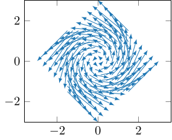
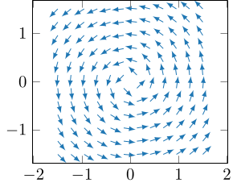
ベクトル場の図示において, 例えば $(x, y) = (1, 1)$ を始点とする矢印は $\mathbf{f}(1, 1) = (1, -1)$ に対応している (つまり始点が $(1,1)$, 終点が $(2,0)$ である矢印として表されている). 一方で, 方向場において $(x, y) = (1, 1)$ を始点とする矢印は $\mathbf{f}(1, 1) = (1, -1)$ に対応する方向を指しているが, スケールについては適当に調整されている.
ベクトル場を図示した場合, 上の例のように複数の矢印が交わって見にくくなることが多い. これを回避するために, 矢印の長さについては適当に調整し, ベクトル場の向きにのみ注目したものが方向場である.
自励系 $\mathbf{x}' = \mathbf{f}(\mathbf{x})$ に対し, ベクトル場 $\mathbf{f}$ の図示および方向場は, $\mathbf{x}'$ の向きを表す (つまり時間経過により $\mathbf{x}(t)$ がどの方向に動くかを表す) ものになる. また, 自励系 $\mathbf{x}' = \mathbf{f}(\mathbf{x})$ の平衡点は, ベクトル場 $\mathbf{f}$ の図示 (もしくは方向場) が "どこも向いていない点" であると解釈できる.
- 力学系の解 $\mathbf{x}(t)$ が取り得る全ての状態からなる空間を 相空間 (もしくは 状態空間) という.
- ある自励系の相空間を $X$ とおき, その自励系の解 $\mathbf{x}(t)$ が, 初期値 $\mathbf{x}_0$ に依存することを強調して \[ \mathbf{x}(t) = S(t)\mathbf{x}_0 \] と表す. このとき写像 $S(t): X \to X$ の族 $\{S(t) : t\in\mathbb{R}\}$ (もしくは $\{S(t) : t\in\mathbb{Z}\}$) を, この自励系の 流れ (もしくは フロー) という.
- ある自励系の解 $\mathbf{x}(t)$ に対して (初期値 $\mathbf{x}_0$ に依存することを強調するために流れ $S(t)$ を用いて $\mathbf{x}(t) = S(t)\mathbf{x}_0$ と表すとき), \[ \{S(t)\mathbf{x}_0 : t\in \mathbb{R}\} \subset X\quad (\mbox{もしくは }\{S(t)\mathbf{x}_0 : t\in \mathbb{Z}\} \subset X) \] を, (初期値 $\mathbf{x}_0$ に対する) 軌道 (trajectory) もしくは 解軌道 という.
- ある力学系の (様々な初期値に対する) 軌道の概略を相空間上に表した図を 相図 (phase portrait) という.
- 数学における流れ (および軌道) は, 本来は力学系とは別に定義されるものであり, そのアイデアを力学系にも応用できると説明されるべきものである. また, 非自励系に対しても (時間依存する) 流れを考えることができるが, ここではこれ以上深入りしない.
- 自励系 $\mathbf{x}' = \mathbf{f}(\mathbf{x})$ においては, $\mathbf{x}(t) = S(t)\mathbf{x}_0$ が時間経過に伴いどのように動くか, という情報が $\mathbf{f}(\mathbf{x})$ として (時間に無関係なベクトル場として) 与えられることになる. 従って, ベクトル場 $\mathbf{f}(\mathbf{x})$ (もしくは方向場) を図示することで, $\mathbf{x}(t)$ が時間経過により相空間上をどの向きに動くかをイメージできる, つまり軌道の概形がわかる.
- より直感的には, 自励系の解は $\mathbf{f}$ により与えられた向きと大きさに従い, 時間経過により相空間上を流れる点であるとイメージすることができる.
- ただし, 与えられたベクトル場 $\mathbf{f}$ の方向場を図示するには, 大量の点の上で $\mathbf{f}$ の値を計算する必要がある. コンピュータを利用しない限り, あまり現実的ではない.
- 流れ $S(t)$ は,
\[
\left\{\begin{array}{rll}
S(0)\mathbf{x} &= \mathbf{x} & \text{for all}\quad \mathbf{x}\in X, \cr
S(t)S(s)\mathbf{x} &= S(s+t)\mathbf{x} & \text{for all}\quad\mathbf{x}\in X
\end{array}\right.
\] を満たす (この性質を 半群性 と呼ぶことがある).
特に初期値 $\mathbf{x}_0$ に対する自励系の解 $\mathbf{x}(s) = S(s)\mathbf{x}_0$ を考えると, $\mathbf{x}(s)$ を初期値として時刻 $t$ だけ進めた結果と, $\mathbf{x}(0)$ を初期値として時刻 $s+t$ だけ進めた結果が一致する.
- 特に線形力学系 $\mathbf{x}' = A\mathbf{x}$ に対して, $S(t)\mathbf{x}_0 = e^{tA}\mathbf{x}_0$ である. つまり, 写像 $S(t)$ は行列 $e^{tA}$ を左から掛ける操作であり, $S(t) = e^{tA}$ と表記される. また \[ S(t)S(s)\mathbf{x}_0 = e^{tA}(e^{sA}\mathbf{x}_0) = e^{(s+t)A}\mathbf{x}_0 = S(s+t)\mathbf{x}_0 \] を確かめることができる.
- 解が一意であるような自励系の相図において, 各軌道は平衡点以外の点において他の軌道や自身と交差することはない (もし平衡点でないある点で交差するならば, その点を初期値とした解 $\mathbf{x}(t)$ が複数存在することになってしまい解の一意性に矛盾する).
- 力学系の平衡点は時間経過により動かないような解のことなので, 軌道が一点からなるような初期値に対応していると解釈できる.
- 力学系の軌道は初期値の違いにより異なる挙動を示すことがある. この挙動の違いをわかりやすく図で表すものが相図であり, 解を明示的に表示できない場合に相図を描くことで, 解のおおまかな挙動を把握, 説明することが容易となる.
- ただし, 相空間 $X$ が高次元 (偏微分方程式を力学系と解釈する場合には $X$ を無限次元の関数空間とすることもある) だと相図による解の表現は困難である.
線形力学系 \[ \begin{pmatrix} x' \cr y' \end{pmatrix} = \begin{pmatrix} 0 & 1 \cr -1 & 0 \end{pmatrix}\begin{pmatrix} x \cr y \end{pmatrix} = \begin{pmatrix} y \cr -x \end{pmatrix} \] を考える. この右辺のベクトル場 \[ \mathbf{f}(x, y) = \begin{pmatrix} y \cr -x \end{pmatrix} \] に対応する方向場が, \[ \mathbf{x}(t) = \begin{pmatrix} x(t) \cr y(t) \end{pmatrix} \] が時間経過によりどのように動くかを表していることになるため, 初期値を与えたときの軌道を (ある程度ではあるが) 予想することができる.
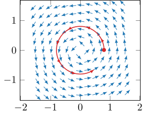
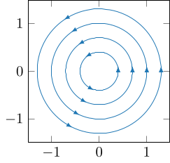
相図に描かれている各曲線 (今回は円周) が, 初期値を適当に指定した際の軌道 (つまりこの力学系の解 $\mathbf{x}(t)$ の時間経過による動き) を表している.
なお, この例では各軌道が原点, つまりこの力学系の平衡点を中心とする円を描いている. このような平衡点は 渦心点 (もしくは センター) であると言われる.
2.2: 平衡点の安定性
自励系 $\mathbf{x}' = \mathbf{f}(\mathbf{x})$ を例とすると, 与えられたベクトル場 $\mathbf{f}$ の方向場を描くことで, 適当な初期値に対する軌道の概形が得られ, 複数の軌道を描くことで相図が得られる. ただし, コンピュータを利用しない限り, 精密な方向場を描くのは大変であり, 一方でコンピュータを利用するならば近似解を計算することで相図をプロットできるため, この方法で解の挙動を調べることは現実的とは言い難い.
実用上は平衡点に注目し, その近傍での解の振る舞いを調べることで力学系の解の挙動を推測することになる. そのため, 近傍での軌道が特徴的な振る舞いを示す平衡点に, その性質により様々な名前が付けられ分類することで解の挙動の説明に利用することができる. ここでは平衡点の安定性と, 安定性による平衡点の分類を紹介する.
自励系 $\mathbf{x}' = \mathbf{f}(\mathbf{x})$ を考える.
- 平衡点に十分近い初期値から出発した全ての解が平衡点の近くに留まり続けるとき, 平衡点は リアプノフ安定 (Lyapunov stable) である, もしくは単に 安定 (stable) であるという.
- 安定でない平衡点は 不安定 (unstable) であるという.
- 平衡点に十分近い初期値から出発した全ての解が平衡点に収束するとき, 平衡点は 吸引的 (attracting) であるという.
- 安定かつ吸引的な平衡点は 漸近安定 (asymptotically stable) であるという.
- 安定だが吸引的でない平衡点は 中立安定 (neutrally stable) であるという.
例として一次元力学系 \[ x' = (1-x)x \] を考える. 右辺を $f(x) = (1-x)x$ とおくと, 平衡点は $f(x)=0$ となる $x=0, 1$ である.
ここで, $f(x)\lt 0$ ならば $x(t)$ は時間経過で減少し, $f(x)\gt0$ ならば $x(t)$ は増加する. 従って, $x=1$ に十分近い任意の初期値から時間経過すると, 下図のように $x(t)$ は $x=1$ に近づいていくことがわかる. これは, $x=1$ が漸近安定な平衡点であることを意味している.
一方で, $x=0$ の近くの初期値から時間発展すると, 解は $x=0$ から離れるように動くため, $x=0$ は不安定な平衡点であることがわかる.
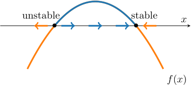
例として \[ A = \begin{pmatrix} a & b \cr -b & a \end{pmatrix} \] に対し線形力学系 $\mathbf{x}' = A\mathbf{x}$ を考える, ただし $b\neq0$ とする (このとき $A$ は正則であり, 線形力学系の平衡点は $\mathbf{0}$ のみである). このとき, 行列 $A\in\mathbb{R}^{2\times 2}$ の固有値は \[ \lambda_1 = a+ib,\quad \lambda_2 = a-ib \] であり, 従って $\operatorname{Re}\lambda_1 = \operatorname{Re}\lambda_2 = a$ である. さらに, 一般解は (以前にも計算したように) \[ \mathbf{x}(t) = \begin{pmatrix} e^{at}(\widetilde{c}_1\cos bt + \widetilde{c}_2\sin bt) \cr e^{at}(-\widetilde{c}_1\sin bt + \widetilde{c}_2\cos bt) \end{pmatrix} \] であり, 特に $e^{at}$ の部分に注目すると, $a$ の符号 (つまり固有値の実部の符号) によって $t\to\infty$ とした際の挙動が異なることが予想できる.
この具体例として,
- $(a, b) = (-10^{-3}, 1)$ のとき ($a\lt 0$ であり, 平衡点は漸近安定),
- $(a, b) = (0, 1)$ のとき ($a= 0$ であり, 平衡点は中立安定),
- $(a, b) = (10^3, 1)$ のとき ($a\gt 0$ であり, 平衡点は不安定)
の相図を (一般解の表示から) 描画すると以下のようになる (特に平衡点 $\mathbf{x} = 0$ 周辺で, 平衡点に近づくか離れるか, もしくは近づきも離れもしないかの違いに注意):
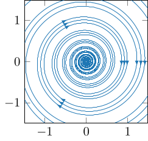
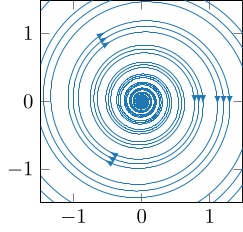
上の $1$ つ目および $3$ つ目の例のように, 解が時間経過により平衡点の周囲を渦巻くような挙動をするとき, 平衡点は 渦状点 (もしくは スパイラル) であるということがある.
上の例のように, 軌道は平衡点に近づく, 離れる (もしくは平衡点周りを周回する) といった振る舞いをする. ここで, 平衡点に近づく, 離れる場合について詳細な分類を紹介する.
- 平衡点が漸近安定であるとき、つまり平衡点の近傍で全ての軌道がその平衡点に近づいていくとき, その平衡点は 沈点 (sink) であるという.
- 平衡点が不安定であって, 特に平衡点の近傍で全ての軌道がその平衡点から離れていくとき, その平衡点は 源点 (source) であるという.
- 平衡点が不安定であって, 特に平衡点の近傍でその平衡点に近づいていく軌道と離れていく軌道の両方が存在するとき, その平衡点は 鞍点 (saddle) であるという.
- 源点もしくは沈点である平衡点を ノード と呼ぶことがある
- (上の $1$ つ目の例のように) 渦状点でありかつ源点である平衡点を 渦状源点 と呼ぶことがある.
- (上の $3$ つ目の例のように) 渦状点でありかつ沈点である平衡点を 渦状沈点 と呼ぶことがある.
例として, \[ A = \begin{pmatrix} \lambda_1 & 0 \cr 0 & \lambda_2 \end{pmatrix} \] に対し線形力学系 $\mathbf{x}' = A\mathbf{x}$ を考える, ただし $\lambda_1\neq \lambda_2$, $\lambda_1\neq0$, $\lambda_2\neq0$ とする (このとき $A$ は正則であり, 線形力学系の平衡点は $\mathbf{0}$ のみである). このとき, 行列 $A\in\mathbb{R}^{2\times 2}$ の固有値は $\lambda_1$, $\lambda_2$ であり, また一般解は \[ \mathbf{x}(t) = \begin{pmatrix} c_1e^{\lambda_1 t} \cr c_2e^{\lambda_2 t} \end{pmatrix} \] である. 簡単のため, $\lambda_1\lt \lambda_2$ とすると,
- $\lambda_1 \lt \lambda_2 \lt 0$ のとき (このとき平衡点は沈点となる),
- $0\lt \lambda_1 \lt \lambda_2$ のとき (このとき平衡点は源点となる),
- $\lambda_1 \lt 0\lt \lambda_2$ のとき (このとき平衡点は鞍点となる)
の三つの場合を考えることができる. 実際に, 一般解の表示から相図を描画することで平衡点 $\mathbf{x}=0$ がそれぞれ沈点, 源点, 鞍点となっていることを確認できる.
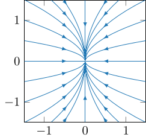
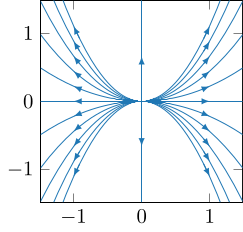
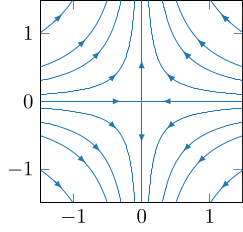
$\mathbf{x}(t)\in\mathbb{R}^2$ について, 線形力学系 \[ \mathbf{x}' = \begin{pmatrix} 1 & 3 \cr 1 & -1 \end{pmatrix}\mathbf{x} \] を考える.
- 一般解を求めよ.
- 初期条件 $\mathbf{x}(0) = \begin{pmatrix} 1 \cr 1 \end{pmatrix}$ を与えた際の特殊解 $\mathbf{x}_1(t)$ が, $t\to\infty$ としたときに平衡点 $\mathbf{0}$ に収束するか否か答えよ.
- 初期条件 $\mathbf{x}(0) = \begin{pmatrix} -1 \cr 1 \end{pmatrix}$ を与えた際の特殊解 $\mathbf{x}_2(t)$ が, $t\to\infty$ としたときに平衡点 $\mathbf{0}$ に収束するか否か答えよ.
- 線形力学系の行列の固有値は $\lambda_1 = -2$, $\lambda_2 = 2$ であり, 対応する固有ベクトルは例えば \[ \mathbf{v}_1 = \begin{pmatrix} 1 \cr -1 \end{pmatrix},\quad \mathbf{v}_2 = \begin{pmatrix} 3 \cr 1 \end{pmatrix} \] である. 従って, 一般解は \[ \begin{array}{rl} \mathbf{x}(t) &= c_1e^{\lambda_1 t}\mathbf{v}_1 + c_2e^{\lambda_2 t}\mathbf{v}_2 \cr &= c_1e^{-2t}\begin{pmatrix} 1 \cr -1 \end{pmatrix} + c_2e^{2t}\begin{pmatrix} 3 \cr 1 \end{pmatrix} \end{array} \] である.
- 初期条件 $\mathbf{x}(0) = \begin{pmatrix} 1 \cr 1 \end{pmatrix}$ を与えた際の特殊解 \[ \mathbf{x}_1(t) = \widetilde{c}_1e^{-2t}\mathbf{v}_1 + \widetilde{c}_2e^{2t}\mathbf{v}_2 \] について, $\mathbf{x}(0) = \widetilde{c}_1\mathbf{v}_1 + \widetilde{c}_2\mathbf{v}_2$ であることから $\widetilde{c}_2\neq0$ である. 従って, $\displaystyle\lim_{t\to\infty}\mathbf{x}_1(t)\neq\mathbf{0}$.
- 初期条件 $\mathbf{x}(0) = \begin{pmatrix} -1 \cr 1 \end{pmatrix} = -\mathbf{v}_1$ を与えた際の特殊解は $\mathbf{x}_2(t) = -e^{-2t}\mathbf{v}_1$ なので $\displaystyle\lim_{t\to\infty}\mathbf{x}_2(t) = \mathbf{0}$.
- このように, 平衡点に近づく軌道と離れる軌道が両立している. つまり, この平衡点 $\mathbf{0}$ は鞍点となっている.
平衡点が鞍点である場合, 時間経過により解 $\mathbf{x}(t)$ が平衡点に近づくか離れるかは初期値に依存することになる. どのような初期値に対して解がどのように動くか, を表す概念の一つとして, 安定集合 というアイデアがある:
力学系の相空間 $X$ およびフロー $\{S(t): t\in\mathbb{R}\}$ を考える.
- 平衡点 $\widetilde{\mathbf{x}}$ に対して, \[ W^s(\widetilde{\mathbf{x}}) = \{\mathbf{x}_0\in X : S(t)\mathbf{x}_0 \to \widetilde{\mathbf{x}} \quad\text{as}\quad t\to\infty\} \] を平衡点 $\widetilde{\mathbf{x}}$ の 安定集合 (stable set) という. 安定集合が多様体としての構造を持つなら 安定多様体 (stable manifold) と呼ばれる.
- 平衡点 $\widetilde{\mathbf{x}}$ に対して, \[ W^u(\widetilde{\mathbf{x}}) = \{\mathbf{x}_0\in X : S(t)\mathbf{x}_0 \to \widetilde{\mathbf{x}} \quad\text{as}\quad t\to-\infty\} \] を平衡点 $\widetilde{\mathbf{x}}$ の 不安定集合 (unstable set) という. 不安定集合が多様体としての構造を持つなら 不安定多様体 (unstable manifold) と呼ばれる.
正方行列 $A\in\mathbb{R}^{d\times d}$ を用いて表される線形力学系 $\mathbf{x}' = A\mathbf{x}$ に対しては, 安定集合および不安定集合は必ず $\mathbb{R}^d$ の線型部分空間になる. そのため, 安定部分空間 (stable subspace), 不安定部分空間 (unstable subspace) という言葉が用いられる.
線形力学系 \[ \mathbf{x}' = \begin{pmatrix} -1 & 2 \cr 0 & 1 \end{pmatrix}\mathbf{x} \] を考える. 行列の固有値および対応する固有ベクトルは \[ \lambda_1 = -1,\quad \lambda_2 = 1,\quad \mathbf{v}_1 = \begin{pmatrix} 1 \cr 0 \end{pmatrix}, \quad \mathbf{v}_2 = \begin{pmatrix} 1 \cr 1 \end{pmatrix} \] であり, 従って一般解は \[ \mathbf{x}(t) = c_1e^{-t}\begin{pmatrix} 1 \cr 0 \end{pmatrix} + c_2e^t\begin{pmatrix} 1 \cr 1 \end{pmatrix} \] である. これを元に相図を描くと, $\{(x, y)\in\mathbb{R}^2 : y=0\}$ (つまり $x$ 軸上の部分, $\mathbf{v}_1$ で張られる部分空間) が安定部分空間となっていることがわかる. 同様に, $\{(x,y)\in\mathbb{R}^2 : y=x\}$ (つまり $\mathbf{v}_2$ で張られる部分空間) が不安定部分空間である.
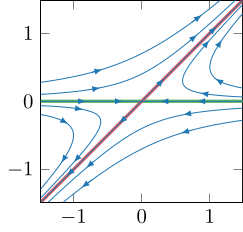
$2$ 次元線形力学系を具体例に言及したように, 行列 $A$ の固有値および固有ベクトルは線形力学系の解の挙動を記述する重要な情報となる. 実際に, 上の例では安定部分空間および不安定部分空間が固有ベクトルと関連していることを確認できるが, これは偶然ではない. この資料では詳細は割愛するが, $2$ 次元の場合と同様に固有値 (の実部) の正負や重複度, 固有ベクトルを調べることで, 一般の $d$ 次元線形力学系の一般解が得られ, 特に以下の成立がわかる:
- 実部が負である固有値に対応する行列 $A$ の (一般固有ベクトルを含む) 固有ベクトルたちの実部および虚部により張られる部分空間は, この線形力学系の安定部分空間である.
- 実部が正である固有値に対応する行列 $A$ の (一般固有ベクトルを含む) 固有ベクトルたちの実部および虚部により張られる部分空間は, この線形力学系の不安定部分空間である.
- 行列 $A$ の全ての固有値の実部が $0$ 以下であれば, 原点は安定な平衡点である.
- 行列 $A$ の全ての固有値の実部が負であれば, 原点は漸近安定な平衡点である (沈点である).
- 行列 $A$ の固有値に実部が正のものが存在するならば, 原点は不安定な平衡点である.
- 行列 $A$ の全ての固有値の実部が正であれば, 原点は不安定な平衡点であり, 特に源点である.
- 行列 $A$ の固有値に実部が正のものと負のものどちらも存在するならば, 原点は不安定な平衡点であり, 特に鞍点である.
特に \[ \text{正方行列 $A$ の全ての固有値の実部が負} \iff e^{tA}\to 0 \text{ as }t\to\infty \iff \text{$\mathbf{x}' = A\mathbf{x}$ について $\mathbf{0}$ は漸近安定な平衡点} \] は, 線形力学系の安定性の議論においてしばしば用いられるものである. 全ての固有値の実部が負である正方行列を, 特に フルヴィッツ安定行列 (Hurwitz stable matrix) と呼ぶことがある.
固有値実部の正負により, 対応する固有ベクトルたちにより張られる空間が線形力学系の安定部分空間, 不安定部分空間になる. 同様に, 実部が $0$ である固有値に対応する固有ベクトルにより張られる線形部分空間を考えよう.
正方行列 $A\in\mathbb{R}^{d\times d}$ を用いて表される線形力学系 $\mathbf{x}' = A\mathbf{x}$ について, 行列 $A$ が実部が $0$ である固有値を持つならば, 対応する (一般固有ベクトルを含む) 固有ベクトルたちの実部および虚部で張られる $\mathbb{R}^d$ の線形部分空間を 中心部分空間 (center subspace) という.
上で述べた性質は, 固有値が実数でない場合, 固有ベクトルが実ベクトルでない場合も含めて考慮している. これを整理し直感的に説明しなおすとともに, 線形力学系の相図の概形について改めてまとめよう:
- 線形力学系の固有値を調べることで, 対応する固有ベクトルから安定部分空間, 不安定部分空間, 中心部分空間をそれぞれ得ることができる.
- 以下, それぞれ $E^s$, $E^u$, $E^c$ と表すことにすると, $\mathbb{R}^d$ をこれらの直和で表すことができる: \[ \mathbb{R}^d = E^s \oplus E^u \oplus E^c. \]
- 初期値が安定部分空間上に存在するならば, 解 $\mathbf{x}(t)$ は時間経過とともに線形力学系の平衡点 $\mathbf{0}$ に近づいていく.
- 線形力学系の解の表示より, 解は指数収束 (指数関数的な速さで収束) することがわかる.
- 特に, $E^s = \mathbb{R}^d$ の場合 (不安定部分空間も中心部分空間も空集合である場合), 全ての解は平衡点に近づくことになり, つまり原点は漸近安定である.
- 初期値が不安定部分空間上に存在するならば, 解 $\mathbf{x}(t)$ は時間に逆行したときに線形力学系の平衡点 $\mathbf{0}$ に近づいていく.
- 時間経過とともに指数的に成長する, と表現されることがある.
- 特に, $E^u = \mathbb{R}^d$ の場合 (安定部分空間も中心部分空間も空集合である場合), 全ての解は時間に逆行したとき平衡点に近づくことになり, つまり原点は源点である.
- 中心部分空間上の点が, 時間経過とともにどのように振る舞うかに関してはさまざまなパターンがある得る.
- 最もシンプルな挙動は単純に回転するものだが, 例えば $2$ 次元線形力学系でも固有値が $0$ のみ (重複度 $2$) の場合などはその限りではない.
- ただし指数的収束も指数的成長もしないことは確かである.
- 安定部分空間と不安定部分空間の両方が存在する場合, 原点は鞍点となり, 解の軌道は時間に逆行すると安定部分空間に近づき, 時間経過により不安定部分空間に近づく.
- 安定部分空間と中心部分空間の両方が存在する場合, 原点は (漸近安定ではないが) 中立安定であり, 解の軌道は時間経過により中心部分空間に近づく.
線形力学系 \[ \mathbf{x}' = \begin{pmatrix} -1 & 1 \cr 0 & -1 \end{pmatrix} \] を考える. 行列の固有値は $-1$ (重複度 $2$) であり, 全ての固有値 (の実部) の符号が負であるため, 安定部分空間は $\mathbb{R}^2$ 全体であり, 原点は漸近安定である. 実際に, 一般解が \[ \mathbf{x}(t) = c_1e^{-t}\begin{pmatrix} 1 \cr 0 \end{pmatrix} + c_2e^{-t}\begin{pmatrix} t \cr 1 \end{pmatrix} \] となることから, 相図を描くと下のようになり, 原点が沈点となっていることがわかる.
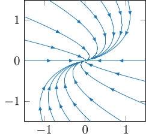
線形力学系 \[ \mathbf{x}' = \begin{pmatrix} -0.1 & 1 & 0 \cr -1 & -0.1 & 0 \cr 0 & 0 & 0.1 \end{pmatrix}\mathbf{x} \] を考える. これは $3$ 次元線形力学系であるが, $2$ 次元の場合と同様に行列の固有値 \[ \lambda_1 = 0.1,\quad \lambda_2 = -0.1+ i,\quad \lambda_3 = -0.1-i \] および対応する固有ベクトル \[ \mathbf{v}_1 = \begin{pmatrix} 0 \cr 0 \cr 1 \end{pmatrix}, \quad \mathbf{v}_2 = \begin{pmatrix} 1 \cr i \cr 0 \end{pmatrix},\quad \mathbf{v}_3 = \begin{pmatrix} 1 \cr -i \cr 0 \end{pmatrix} \] を用いて一般解を表すことができる. 具体的には, 複素数値関数を許すならば \[ \mathbf{x}(t) = c_1e^{\lambda_1 t}\mathbf{v}_1 + c_2e^{\lambda_2 t}\mathbf{v}_2 + c_3e^{\lambda_3 t}\mathbf{v}_3 \quad (c_1, c_2, c_3\in\mathbb{C}) \] であるが, $2$ 次元線形力学系のときと同様に, 実数値となるものだけを取り出すと \[ \begin{array}{rl} \mathbf{x}(t) &= c_1e^{\lambda_1 t}\mathbf{v}_1 + c_2\operatorname{Re}\left(e^{\lambda_2 t}\mathbf{v}_2\right) + c_3\operatorname{Im}\left(e^{\lambda_2 t}\mathbf{v}_3\right) \cr &= c_1e^{0.1 t}\begin{pmatrix} 0 \cr 0 \cr 1 \end{pmatrix} + c_2e^{-0.1 t}\begin{pmatrix} \cos t \cr -\sin t \cr 0 \end{pmatrix} + c_3e^{-0.1 t}\begin{pmatrix} \sin t \cr \cos t \cr 0 \end{pmatrix} \quad (c_1, c_2, c_3\in\mathbb{R}) \end{array} \] となる. とはいえ, このような解の表示を得ることなく, 解の軌道の大まかな振る舞いを知ることも可能である: 固有値 $-0.1\pm i$ に対応する固有ベクトルの実部と虚部, つまり \[ \begin{pmatrix} 1 \cr 0 \cr 0 \end{pmatrix}, \quad \begin{pmatrix} 0 \cr 1 \cr 0 \end{pmatrix} \] により張られる空間 ($xyz$ 空間内の $xy$ 平面) が安定部分空間であり, 一方で固有値 $0.1$ に対応する固有ベクトル $\mathbf{v}_1$ で張られる空間 ($xyz$ 空間内の $z$ 軸) が不安定部分空間である. 従って, 原点は鞍点となり, 安定部分空間上にも不安定部分空間上にも無い点は, 時間経過と共に $z$ 軸に近づくような挙動をすることがわかる. 実際に, 適当な初期値に対する軌道をプロットしたものは以下のようになる:
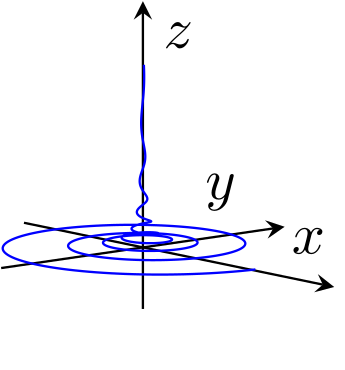
線形力学系 \[ \mathbf{x}' = \begin{pmatrix} -1 & 0 & 0 \cr 0 & 0 & 1 \cr 0 & 0 & 0 \end{pmatrix} \] を考える. やはり行列固有値 \[ \lambda_1 = -1,\quad \lambda_2 = \lambda_3 = 0 \] に対応する (一般) 固有ベクトル \[ \mathbf{v}_1 = \begin{pmatrix} 1 \cr 0 \cr 0 \end{pmatrix}, \quad \mathbf{v}_2 = \begin{pmatrix} 0 \cr 1 \cr 0 \end{pmatrix}, \quad \mathbf{v}_3 = \begin{pmatrix} 0 \cr 0 \cr 1 \end{pmatrix} \] を用いて一般解を表すことができる. 具体的には, $A\mathbf{v}_3 = \mathbf{v}_2$ に注意すると \[ \mathbf{x}(t) = c_1e^{-t}\mathbf{v}_1 + c_2e^0\mathbf{v}_2 + c_3(te^0\mathbf{v}_2 + e^0\mathbf{v}_3) = c_1e^{-t}\mathbf{v}_1 + c_2\mathbf{v}_2 + c_3(t\mathbf{v}_2+\mathbf{v}_3) \] が \[ \mathbf{x}' = -c_1e^{-t}\mathbf{v}_1 + c_3\mathbf{v}_2 = A\mathbf{x} \] を満たしていることが確認できるため, これが一般解である. この解について考えてみると, $c_1e^{-t}\mathbf{v}_1$ は指数的に $0$ に近づき (つまり解は安定部分空間 "方向" に急激に減衰することで), 安定部分空間に近づいていく.
この例では, 解軌道が指数的に中心部分空間に近づく, という挙動をする点に注目したい. 解がひとたび中心部分空間に近づいてしまえば, あとは概ね $c_3\mathbf{v}_2t + (c_2\mathbf{v}_2 + c_3\mathbf{v}_3)$ と表される動きに近づいていくことがわかる, つまりこの例では時間経過に伴い安定部分空間に沿って無限遠に発散するように動くということがわかる. 実は非線形力学系に対しても, 同様のアイデアにより 中心多様体 上の解の挙動を調べることが, 安定性解析において重要となる.
線形力学系 \[ \mathbf{x}' = \begin{pmatrix} 1 & 3 \cr 1 & -1 \end{pmatrix}\mathbf{x} \] の相図の概形を描け.
行列 $A$ の固有値は $\lambda_1 = -2$, $\lambda_2 = 2$ であり, 対応する固有ベクトルは例えば \[ \mathbf{v}_1 = \begin{pmatrix} 1 \cr -1 \end{pmatrix},\quad \mathbf{v}_2 = \begin{pmatrix} 3 \cr 1 \end{pmatrix} \] である. ここまで計算すれば一般解を明示的に表すことで相図を精密に描くこともできるが, ここでは概形のみを考える.
まず, $\mathbf{v}_1$ で張られる部分空間が不安定部分空間であり, $\mathbf{v}_2$ で張られる部分空間が安定部分空間である. 安定部分空間上の点は平衡点 $\mathbf{0}$ に収束し, 不安定部分空間上の点は $\mathbf{0}$ から遠ざかるように動く. 他の全ての解は, 時間に逆行すると安定部分空間に近づき, 時間経過により不安定部分空間に近づく. (自励系の軌道は交差しないという性質も併せて) これだけの情報から, 以下のような相図となっていることを推測できる:
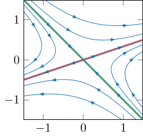
2.3: リアプノフの安定性定理
線形力学系を具体例として安定性 (リアプノフ安定性) について解説したが, 非線形力学系に対しても平衡点が安定か否かを調べることは, 解のおおまかな挙動を知る上で重要な情報である.
まず, 上で言及した平衡点の安定性の定義を, 数学的に厳密な形で改めて述べる:
自励系 $\mathbf{x}' = \mathbf{f}(\mathbf{x})$ の初期値 $\mathbf{x}_0\in\mathbb{R}^d$ に対する解 $\mathbf{x}(t)$ を考える.
- 平衡点 $\widetilde{\mathbf{x}}\in \mathbb{R}^d$ について, 任意の $\varepsilon\gt 0$ に対して, ある $\delta\gt 0$ が存在し, \[ \|\mathbf{x}_0-\widetilde{\mathbf{x}}\| \lt \delta \implies \|\mathbf{x}(t) - \widetilde{\mathbf{x}}\|\lt \varepsilon\quad\text{for all}\quad t\ge 0 \] が成立するとき, 平衡点 $\widetilde{\mathbf{x}}\in \mathbb{R}^d$ は リアプノフ安定 (Lyapunov stable) である (もしくは単に 安定 である) という.
- 安定でない平衡点は 不安定 (unstable) であるという.
- 安定な平衡点 $\widetilde{\mathbf{x}}\in \mathbb{R}^d$ について, \[ \lim_{t\to\infty}\|\mathbf{x}(t)-\widetilde{\mathbf{x}}\|=0 \] が成立するとき, 平衡点 $\widetilde{\mathbf{x}}\in \mathbb{R}^d$ は 吸引的 (attracting) である, もしくは 漸近安定 (asymptotically stable) であるという.
- リアプノフ安定だが吸引的でない平衡点は 中立安定 (neutrally stable) であるという.
平衡点の安定性は, 解が任意の時刻において平衡点近傍にとどまり続けることと解釈されるが, 一般にこれを示そうとすると $t\to\infty$ における挙動を調べる必要があり面倒である. そこで, 安定性を証明するための手法として, 以下の定理が用いられることがある:
ベクトル場 $\mathbf{f}:\mathbb{R}^d\to\mathbb{R}^d$ は 連続 であるとする. このとき, 自励系 $\mathbf{x}' = \mathbf{f}(\mathbf{x})$ の平衡点 $\widetilde{\mathbf{x}}\in\mathbb{R}^d$ に対し, 以下を満たす 微分可能な 関数 $V:\mathbb{R}^d\to\mathbb{R}$ が存在するならば, 平衡点 $\widetilde{\mathbf{x}}$ は安定である:
- $V(\widetilde{\mathbf{x}}) = 0$,
- 任意の $\mathbf{x}\neq \widetilde{\mathbf{x}}$ に対し $V(\mathbf{x}) \gt 0$,
- 任意の $\mathbf{x}\neq \widetilde{\mathbf{x}}$ に対し $\nabla V(\mathbf{x})\cdot \mathbf{f}(\mathbf{x})\le 0$.
また, 上の $3$ つ目の条件の代わりに,
- 任意の $\mathbf{x}\neq \widetilde{\mathbf{x}}$ に対し $\nabla V(\mathbf{x})\cdot\mathbf{f}(\mathbf{x})\lt 0$
が満たされるならば, 平衡点 $\widetilde{\mathbf{x}}$ は漸近安定である.
条件を満たす関数 $V$ は (存在するならば) 平衡点 $\widetilde{\mathbf{x}}$ における リアプノフ関数 (Lyapunov function) という. また, $\nabla V(\mathbf{x})\cdot \mathbf{f}(\mathbf{x})\le 0$ の代わりに $\nabla V(\mathbf{x})\cdot\mathbf{f}(\mathbf{x})\lt 0$ を満たすリアプノフ関数は 狭義リアプノフ関数 (strict Lyapunov function) と呼ばれることがある. リアプノフ関数 (狭義リアプノフ関数) は以下の性質を満たしている:
- 関数 $V$ は平衡点 $\widetilde{\mathbf{x}}$ で最小値 $V(\widetilde{\mathbf{x}}) = 0$ を達成する.
- $V$ は微分可能, 特に連続なので, 任意の $\alpha\gt 0$ に対しある $\delta\gt 0$ が存在し, \[ \|\mathbf{x} - \widetilde{\mathbf{x}}\|\lt \delta \implies |V(\mathbf{x}) - V(\widetilde{\mathbf{x}})| = V(\mathbf{x}) \lt \alpha. \]
- 自励系の解 $\mathbf{x}(t)$ に対し, $\mathbf{x}(t)\in \mathbb{R}^d\backslash\{\widetilde{\mathbf{x}}\}$ ならば \[ \dot{V}(\mathbf{x}) = \dfrac{d}{dt}V(\mathbf{x}(t)) = \nabla V(\mathbf{x}(t))\cdot \mathbf{x}'(t) = \nabla V(\mathbf{x}(t))\cdot\mathbf{f}(\mathbf{x}(t)) \le 0 \quad (\text{もしくは } \lt 0), \] つまり解 $\mathbf{x}(t)$ が時間経過により動くとき, $V(\mathbf{x}(t))$ の値は $t$ について単調減少 (もしくは狭義単調減少) する. なお, $\mathbf{f}$ が連続かつ $V$ が微分可能であるため, 関数 $\nabla V\cdot\mathbf{f}$ も連続である.
このような関数 $V$ は, この自励系のエネルギー (ポテンシャル) に例えられる. このエネルギーが平衡点において最小化を達成し, かつ解 $\mathbf{x}(t)$ の時間経過とともにエネルギーが増加しない (もしくは減少する) とき, 直感的には解 $\mathbf{x}(t)$ は平衡点付近に留まる (もしくは平衡点に近づいていく) ことを意味している.
この定理は安定性の十分条件を与えるものであって, 必要十分条件ではないことに注意.
- (安定性)
- 任意の $\varepsilon\gt 0$ に対し, 中心 $\widetilde{\mathbf{x}}$, 半径 $\varepsilon$ の開球 $B_{\varepsilon}(\widetilde{\mathbf{x}})$ を考える. この境界上における関数 $V$ の最小値 (極値定理より存在する) を $\alpha$ とおくと, 条件より $\alpha\gt 0$ である. 従って, $V$ の性質より, ある $\delta\gt 0$ が存在し, \[ V(\mathbf{x}) \lt \alpha\quad\text{for all}\quad \mathbf{x}\in B_{\delta}(\widetilde{\mathbf{x}}) \] が成立する.
- いま, 初期値 $\mathbf{x}_0\in B_{\delta}(\widetilde{\mathbf{x}})$ に対する解 $\mathbf{x}(t)$ が時間経過により動くとき, $V(\mathbf{x}(t))$ の値は単調減少するため, 特に $V(\mathbf{x}(t))\ge\alpha$ となることはない. このことは, $\mathbf{x}(t)$ が $B_{\varepsilon}(\widetilde{\mathbf{x}})$ の境界に到達することはない ($\mathbf{x}(t)$ は $B_{\varepsilon}(\widetilde{\mathbf{x}})$ の内部にとどまり続ける), ということを意味しているため, \[ \|\mathbf{x}_0 - \widetilde{\mathbf{x}}\|\lt \delta \implies \|\mathbf{x}(t) - \widetilde{\mathbf{x}}\|\lt \varepsilon\quad\text{for all}\quad t\ge 0 \] が得られる.
- (漸近安定性)
- 任意の $\mathbf{x}\neq \widetilde{\mathbf{x}}$ に対し, 代わりに $\nabla V(\mathbf{x})\cdot\mathbf{f}(\mathbf{x})\lt 0$ の成立を仮定した場合も, 上と同様に安定であることは良い.
- あとは吸引的であること, つまりある $\widetilde{\delta}\gt 0$ が存在し, 任意の $\widetilde{\varepsilon}\gt 0$ に対しある $T\gt 0$ が存在し, \[ \|\mathbf{x}_0-\widetilde{\mathbf{x}}\|\lt \widetilde{\delta} \implies \|\mathbf{x}(t)-\widetilde{\mathbf{x}}\|\lt \widetilde{\varepsilon}\quad \text{for all}\quad t\gt T \] を証明すれば良い (安定性の証明とは異なり, $\widetilde{\varepsilon}$ に依存しない $\widetilde{\delta}$ の存在を示す).
- まず, 自励系の解 $\mathbf{x}(t)$ と流れ $S(t)$ には \[ S(t)\mathbf{x}(s) = \mathbf{x}(s+t) \] という関係が成り立つのだった, つまり任意の $s\ge0$ に対して $\mathbf{x}(s)$ を初期値として自励系の解の時間発展を考えることで, $t\gt s$ における $\mathbf{x}(t)$ が得られるのだった. このことと安定性の証明と同様の手順により, 任意の $\widetilde{\varepsilon}\gt 0$ に対し, ある $\gamma\gt 0$ が存在し \[ \|\mathbf{x}(T)-\widetilde{\mathbf{x}}\|\lt \gamma \implies \|\mathbf{x}(t)-\widetilde{\mathbf{x}}\|\lt \widetilde{\varepsilon}\quad\text{for all}\quad t\gt T \] が成立する.
- あとは, ある $\widetilde{\delta}\gt 0$ が存在し, 任意の $\widetilde{\gamma}\gt 0$ に対しある $T\gt 0$ が存在し \[ \|\mathbf{x}_0-\widetilde{\mathbf{x}}\|\lt \widetilde{\delta} \implies \|\mathbf{x}(T) - \widetilde{\mathbf{x}}\|\lt \widetilde{\gamma} \] が成立することを示せば (特に $\widetilde{\gamma}$ が上のような $\gamma$ の場合も成立するため) 吸引的であることが証明される. これを背理法で証明しよう: すなわち任意の $\widetilde{\delta}\gt0$ に対し, \[ \text{ある $\widetilde{\gamma}\gt 0$ が存在し, 任意の $T\gt 0$ に対し}\quad \|\mathbf{x}(T)-\widetilde{\mathbf{x}}\|\ge \widetilde{\gamma} \] を満たす初期値 $\mathbf{x}_0\in B_{\widetilde{\delta}}(\widetilde{\mathbf{x}})$ の存在を仮定すると矛盾が生じることを示す.
- まず, 微積分学の基本定理より \[ \begin{array}{rl} V(\mathbf{x}(t)) &= V(\mathbf{x}_0) + \displaystyle\int_0^t \dfrac{d}{ds}V(\mathbf{x}(t))~ds \cr &= V(\mathbf{x}_0) + \displaystyle\int_0^t \nabla V(\mathbf{x}(s))\cdot\mathbf{f}(\mathbf{x}(s))~ds \end{array} \] が成立することに注意する. いま $\widetilde{\delta}\gt 0$ を任意に固定し, $\mathbf{x}_0\in B_{\widetilde{\delta}}(\widetilde{\mathbf{x}})$ に注目すると, $\mathbf{x}\neq \widetilde{\mathbf{x}}$ における $V$ の正値性よりある $\widetilde{\alpha}\gt 0$ が存在し $V(\mathbf{x}_0)\lt \widetilde{\alpha}$ である. また, 任意の $\mathbf{x}\neq \widetilde{\mathbf{x}}$ に対し $\nabla V(\mathbf{x})\cdot \mathbf{f}(\mathbf{x})\lt 0$ であることから, 任意の $t\gt 0$ について $\|\mathbf{x}(t)-\widetilde{\mathbf{x}}\|\ge \widetilde{\gamma}$ を達成する初期値 $\mathbf{x}_0\in B_{\widetilde{\delta}}(\widetilde{\mathbf{x}})$ に対し, ある $\widetilde{\beta}\gt 0$ が存在し \[ \nabla V(\mathbf{x}(t))\cdot\mathbf{f}(\mathbf{x}(t)) \lt -\widetilde{\beta}\quad \text{for all}\quad t\gt 0 \] が成立する. 以上より, 任意の $T\gt 0$ に対し \[ 0\lt V(\mathbf{x}(T)) \lt \widetilde{\alpha} + \displaystyle\int_0^T (-\widetilde{\beta})~ds = \widetilde{\alpha}-T\widetilde{\beta} \] となる初期値 $\mathbf{x}_0\in B_{\delta}(\widetilde{\mathbf{x}})$ が存在することになるが, この不等式は $T \gt \widetilde{\alpha}/\widetilde{\beta}$ において成立しないため矛盾する.
上の注意において, リアプノフ関数 $V$ はエネルギー (ポテンシャル) に例えられると言及した. これについて少し掘り下げてみよう:
スカラー値関数 $E: \mathbb{R}^d\to\mathbb{R}$ に対して, $E$ がある点 (少なくとも一点) $\widetilde{\mathbf{x}}$ で最小値 $E(\widetilde{\mathbf{x}}) = 0$ を達成することを仮定する. いま, $\mathbf{f}(\mathbf{x}) = -\nabla E(\mathbf{x})$ のとき, つまり \[ \mathbf{x}' = -\nabla E(\mathbf{x}) \] という力学系を 勾配系 (gradient system) もしくは 勾配流 (gradient flow) という. このとき, $E$ をエネルギー (ポテンシャル) と呼ぶことがある.
勾配系の解は \[ x_i' = -\dfrac{\partial E}{\partial x_i}(\mathbf{x})\quad\text{for all}\quad i=1,\dots, n \] を満たしていることから, 各 $x_i$ は $E$ を小さくする方向に時間発展することがわかる. また, この勾配系に対し, \[ V(\mathbf{x}) = E(\mathbf{x}) \] はリアプノフ関数である. 実際, $E$ が最小値 $E(\widetilde{\mathbf{x}}) = 0$ を達成するという仮定と, \[ \nabla V(\mathbf{x})\cdot \mathbf{f}(\mathbf{x}) = \nabla E(\mathbf{x})\cdot (-\nabla E(\mathbf{x})) = -\|\nabla E(\mathbf{x})\|^2 \] であることから従う. ただし, 一般には狭義リアプノフ関数であるとは限らない.
この定理は自励系の右辺にあるベクトル場が非線形の場合にも適用できるものである. 一方で線形力学系に対しても応用することが可能であり, 特に平衡点 $\mathbf{0}$ が漸近安定となる場合に関連して, 以下の結果が知られている:
行列 $A\in\mathbb{R}^{d\times d}$ を用いて表される線形力学系 $\mathbf{x}' = A\mathbf{x}$ を考える. 任意の正定値対称行列 $Q\in\mathbb{R}^{d\times d}$ に対して, \[ A^{\operatorname{T}}P + PA + Q = 0 \] を満たす正定値対称行列 $P\in\mathbb{R}^{d\times d}$ が存在するならば, この $P$ を用いて \[ V(\mathbf{x}) = \mathbf{x}^{\operatorname{T}}P\mathbf{x} \] と定められる関数は, この線形力学系の平衡点 $\mathbf{0}$ に対する狭義リアプノフ関数となり, 平衡点 $\mathbf{0}$ は漸近安定である.
与えられた行列 $A\in\mathbb{R}^{d\times d}$ と正定値対称行列 $Q\in\mathbb{R}^{d\times d}$ に対して, \[ A^{\operatorname{T}}P + PA + Q = 0 \] という方程式は リアプノフ方程式 と呼ばれるものであり, その解 $P$ を求めることは, 線形力学系で記述されるシステムの安定性を調べる有用な手段の一つである.
まず, $P = (P_{ij})$, $\mathbf{x} = (x_i)$ に対し, \[ V(\mathbf{x}) = \mathbf{x}^{\operatorname{T}}P\mathbf{x} = \sum_{i=1}^n\sum_{j=1}^nx_iP_{ij}x_j \] である. $P$ が対称行列 (つまり $P_{ij} = P_{ji}$) であるならば, $\nabla V\in\mathbb{R}^d$ の第 $k$ 成分は \[ \dfrac{\partial V}{\partial x_k} = \sum_{j=1}^nP_{kj}x_j + \sum_{i=1}^nx_iP_{ik} = 2\sum_{j=1}^nP_{kj}x_j \] であり, 従って $\nabla V(\mathbf{x}) = 2P\mathbf{x}$ である. このことに注意して, 与えられた仮定の下で $V(\mathbf{x})$ が狭義リアプノフ関数の性質を満たしていることを確認する:
- $V(\mathbf{0}) = \mathbf{0}^{\operatorname{T}}P\mathbf{0} = 0$ は明らか.
- $P$ が正定値対称行列であることから, $\mathbf{x}\neq\mathbf{0}$ ならば $V(\mathbf{x})\gt 0$ である.
- いま, \[ \begin{array}{rl} \mathbf{x}^{\operatorname{T}}(A^{\operatorname{T}}P+PA)\mathbf{x} &= 2(P\mathbf{x})^{\operatorname{T}}A\mathbf{x} \cr &= 2\mathbf{x}^{\operatorname{T}}PA\mathbf{x} \cr &= (2P\mathbf{x})\cdot (A\mathbf{x}) \cr &= \nabla V(\mathbf{x})\cdot (A\mathbf{x}) \end{array} \] となるため, これと $Q = -(A^{\operatorname{T}}P+PA)$ が正定値対称行列となることから, $\mathbf{x}\neq\mathbf{0}$ ならば $\nabla V(\mathbf{x})\cdot (A\mathbf{x})\lt 0$ である.
行列 $A, P, Q\in\mathbb{R}^{d\times d}$ について, $Q$ が正定値対称行列とする. 行列 $A$ の全ての固有値の実部が負であれば, \[ P = \int_0^{\infty}e^{tA^{\operatorname{T}}}Qe^{tA}~dt \] は正定値対称行列となり, リアプノフ方程式 \[ A^{\operatorname{T}}P + PA + Q = 0 \] のただ一つの解となる.
行列 $A$ の全ての固有値の実部が負であるとする. このとき, まず行列指数関数を用いて表される広義積分 \[ \int_0^{\infty}e^{tA^{\operatorname{T}}}Qe^{tA}~dt = \lim_{T\to \infty}\int_0^Te^{tA^{\operatorname{T}}}Qe^{tA}~dt \] が収束することを示そう. いま, 行列 $A$ のジョルダン標準形 $J = P^{-1}AP$ に対し, 行列指数関数のジョルダン標準形による表示 より \[ e^{tA} = Pe^{tJ}P^{-1} \] である. これと行列ノルムの劣乗法性より \[ \|e^{tA^{\operatorname{T}}}Qe^{tA}\| \le \|e^{tA}\|^2\|Q\| \le C\|e^{tJ}\|^2 \] であるため, $\|e^{tJ}\|$ の上からの評価に注目すればよいが, 全ての $\lambda_i$ の実部が負であれば, ある定数 $a\gt 0$ が存在し, \[ \|e^{tJ}\| \le Ce^{-a t} \] と上から評価することができるので, 広義積分が絶対収束する (従って収束する) ことが証明される.
行列 $Q$ が対称行列であることから, $P$ も対称行列であることは明らか. また, $Q$ の正定値性を用いると, \[ \mathbf{v}^{\operatorname{T}}P\mathbf{v} = \int_0^{\infty}(e^{tA}\mathbf{v})^{\operatorname{T}}Q(e^{tA}\mathbf{v})~dt \gt 0 \quad\text{for all}\quad \mathbf{v}\neq\mathbf{0} \] も得られる.
次に, $P$ がリアプノフ方程式の解となっていることを示そう. いま, $A$ の全ての固有値の実部が負であることから \[ \int_0^{\infty}\dfrac{d}{dt}(e^{tA^{\operatorname{T}}}Qe^{tA})~dt = \left[e^{tA^{\operatorname{T}}}Qe^{tA}\right]_0^{\infty} = -Q \] であり, 一方で \[ \int_0^{\infty}\dfrac{d}{dt}(e^{tA^{\operatorname{T}}}Qe^{tA})~dt = \int_0^{\infty} A^{\operatorname{T}}e^{tA^{\operatorname{T}}}Qe^{tA} + e^{tA^{\operatorname{T}}}Qe^{tA}A ~ dx = A^{\operatorname{T}}P+PA \] なので, $A^{\operatorname{T}}P + PA + Q = 0$ が得られる.
最後に, このような $P$ が一意に定めることを背理法で示そう: もしも異なる $P_1, P_2\neq0$ に対して \[ A^{\operatorname{T}}P_1 + P_1A + Q = A^{\operatorname{T}}P_2 + P_2A + Q = 0 \] が成立するならば, \[ A^{\operatorname{T}}(P_1-P_2) + (P_1-P_2)A = 0 \] となるため, \[ \dfrac{d}{dt}\left(e^{tA^{\operatorname{T}}}(P_1-P_2)e^{tA}\right) = e^{tA^{\operatorname{T}}}(A^{\operatorname{T}}(P_1-P_2) + (P_1-P_2)A)e^{tA} = 0 \] より, $e^{tA^{\operatorname{T}}}(P_1-P_2)e^{tA}$ は定数であり, 特に $t=0$ での値 $P_1-P_2$ に一致する. しかし, $A$ の全ての固有値の実部が負であることから $e^{tA}\to 0$ as $t\to \infty$ であり, 従って \[ P_1-P_2 = e^{tA^{\operatorname{T}}}(P_1-P_2)e^{tA} \to 0 \text{ as }t\to\infty \] となり $P_1$ と $P_2$ が異なるという仮定に矛盾する.
以上の結果と, 線形力学系において言及した結果とを改めてまとめておこう:
行列 $A\in\mathbb{R}^{d\times d}$ について, 以下の $3$ つは同値である:
- 線形力学系 $\mathbf{x}' = A\mathbf{x}$ の平衡点 $\mathbf{0}$ が漸近安定.
- 行列 $A$ の全ての固有値の実部が負.
- 任意の正定値対称行列 $Q\in\mathbb{R}^{d\times d}$ に対し, リアプノフ方程式 \[ A^{\operatorname{T}}P + PA + Q = 0 \] はただ一つの解 \[ P = \int_0^{\infty}e^{tA^{\operatorname{T}}}Qe^{tA}~dt \] を持ち, また $P$ は正定値対称行列である. この $P$ を用いて \[ V(\mathbf{x}) = \mathbf{x}^{\operatorname{T}}P\mathbf{x} \] と定められる関数は, この線形力学系の平衡点 $\mathbf{0}$ に対する狭義リアプノフ関数となる.
2.4: 線形安定性解析と中心多様体縮約
自励系 $\mathbf{x}'=\mathbf{f}(\mathbf{x})$ の平衡点 $\widetilde{\mathbf{x}}$ に対し, 適切な (狭義) リアプノフ関数を構成することができれば, 平衡点の (漸近) 安定性を証明することができる. 上で見たように, 線型力学系 $\mathbf{x}' = A\mathbf{x}$ の場合には (つまり $\mathbf{f}$ が線型であり $\mathbf{f}(\mathbf{x}) = A\mathbf{x}$ と表される場合には), 行列 $A$ の固有値実部と関連したリアプノフ関数の具体的な構成方法が知られている.
さて, 非線形力学系に対するリアプノフ関数を具体的に構成できるかというと, 一般には否である. そこで, 非線形力学系の安定性の判定に利用できる別のアイデアを紹介する.
- まず, 例として $2$ 次元の連立常微分方程式系, 具体的には $2$ つの $C^1$ 級関数 $f(x, y)$, $g(x, y)$ を用いて表される自励系 \[ \mathbf{x}' = \mathbf{f}(\mathbf{x}) = \begin{pmatrix} f(x, y) \cr g(x, y) \end{pmatrix} \] が平衡点 $\widetilde{\mathbf{x}} = (\widetilde{x}, \widetilde{y})$ を持つという状況を考えよう.
- 関数 $f(x,y)$, $g(x,y)$ の $\widetilde{\mathbf{x}} = (\widetilde{x}, \widetilde{y})$ 周りでのテイラー展開を考えると \[ \begin{array}{rl} f(x, y) &= f(\widetilde{\mathbf{x}}) + \dfrac{\partial f}{\partial x}(\widetilde{\mathbf{x}})(x-\widetilde{x}) + \dfrac{\partial f}{\partial y}(\widetilde{\mathbf{x}})(y-\widetilde{y}) + R_1(x, y), \cr g(x, y) &= g(\widetilde{\mathbf{x}}) + \dfrac{\partial g}{\partial x}(\widetilde{\mathbf{x}})(x-\widetilde{x}) + \dfrac{\partial g}{\partial y}(\widetilde{\mathbf{x}})(y-\widetilde{y}) + R_2(x, y) \end{array} \] となる, ここで $R_1$, $R_2$ は剰余項である.
- これを用いると, 自励系 $\mathbf{x}' = \mathbf{f}(\mathbf{x})$ の平衡点 $\widetilde{\mathbf{x}}$ について ($\mathbf{f}(\widetilde{\mathbf{x}})=0$ に注意して) \[ \mathbf{f}(\mathbf{x}) = D \mathbf{f}(\widetilde{\mathbf{x}}) (\mathbf{x}-\widetilde{\mathbf{x}}) + \mathbf{R}(\mathbf{x}) \] が得られる, ここで \[ D\mathbf{f}(\widetilde{\mathbf{x}}) = \begin{pmatrix} \dfrac{\partial f}{\partial x}(\widetilde{\mathbf{x}}) & \dfrac{\partial f}{\partial y}(\widetilde{\mathbf{x}}) \cr \dfrac{\partial g}{\partial x}(\widetilde{\mathbf{x}}) & \dfrac{\partial g}{\partial y}(\widetilde{\mathbf{x}}) \end{pmatrix}\in\mathbb{R}^{2\times 2} \] はヤコビ行列である.
- いま, 平衡点 $\widetilde{\mathbf{x}}$ の近くにある点 $\mathbf{x}(t)$ が, 時間経過でどのように振る舞うかを考えてみる. まず, テイラー展開の剰余項として現れる $\mathbf{R}(\mathbf{x})$ の影響は (平衡点近くでは) 十分に小さいとみなして良いだろう, つまり \[ \mathbf{x}' = D \mathbf{f}(\widetilde{\mathbf{x}}) (\mathbf{x}-\widetilde{\mathbf{x}}) + \mathbf{R} \approx D\mathbf{f}(\mathbf{\widetilde{x}})(\mathbf{x}-\widetilde{\mathbf{x}}) \] と思って良いだろう. ここで $\mathbf{y} = \mathbf{x}-\widetilde{\mathbf{x}}$ と変数変換すると, $\mathbf{y}(t)$ は原点 $\mathbf{0}$ 近くの点であり, その時間経過による振る舞いは \[ \mathbf{y}' = \mathbf{x}' = D \mathbf{f}(\widetilde{\mathbf{x}}) \mathbf{y} + \mathbf{R} \approx D\mathbf{f}(\widetilde{\mathbf{x}})\mathbf{y} \] となる. ここで, $D\mathbf{f}(\widetilde{\mathbf{x}})\in\mathbb{R}^{2\times 2}$ であったことを思い出すと, $\mathbf{y}' = D\mathbf{f}(\widetilde{\mathbf{x}})\mathbf{y}$ は ($\mathbf{y}$ についての) 線型力学系に他ならない.
ここまでの議論を整理すると, 線型力学系 $\mathbf{y}' = D\mathbf{f}(\widetilde{\mathbf{x}})\mathbf{y}$ の解 $\mathbf{y}(t)$ の原点近くでの挙動, つまり線型力学系の平衡点 $\mathbf{0}$ 近くでの挙動が得られれば, それを \[ \mathbf{x} = \mathbf{y}+\widetilde{\mathbf{x}} \] と変換したもの, つまり $\mathbf{x}' = D\mathbf{f}(\widetilde{\mathbf{x}})(\mathbf{x}-\widetilde{\mathbf{x}})$ が, 自励系 $\mathbf{x}' = \mathbf{f}(\mathbf{x})$ の平衡点 $\widetilde{\mathbf{x}}$ 付近での挙動に近いと思って良いだろう (あくまで平衡点付近に限ることに注意). 元の自励系 $\mathbf{x}' = \mathbf{f}(\mathbf{x})$ に対し, $\mathbf{x}' = D\mathbf{f}(\widetilde{\mathbf{x}})(\mathbf{x}-\widetilde{\mathbf{x}})$ を 線形化方程式 と呼ぶことがあるが, 線形化方程式の安定性は元の自励系の安定性を判断する際に重要な情報となる.
このアイデアに相当することを厳密に証明したものが, 以下に述べるハートマン=グロブマンの定理である. ただし, ここでは以下の定理のステートメントも証明も詳細には説明しない:
この結果を用いることで, 非線形力学系の安定性を調べることができる. これを 線形安定性解析 という. これについて, 後から参照しやすいように定理という形で整理しておく:
- $D\mathbf{f}(\mathbf{\widetilde{x}})$ の全ての固有値の実部が負ならば, 平衡点 $\widetilde{\mathbf{x}}$ は漸近安定である.
- $D\mathbf{f}(\mathbf{\widetilde{x}})$ の固有値に実部が正であるものが存在するならば, 平衡点 $\widetilde{\mathbf{x}}$ は不安定である.
- $D\mathbf{f}(\mathbf{\widetilde{x}})$ の全ての固有値の実部が非ゼロであり, 実部が正の固有値と実部が負の固有値の両方が存在するならば, 平衡点 $\widetilde{\mathbf{x}}$ は鞍点である.
- $D\mathbf{f}(\mathbf{\widetilde{x}})$ の (全ての固有値の実部が $0$ 以下であり) 実部が $0$ である固有値が存在するならば, 平衡点 $\widetilde{\mathbf{x}}$ の安定性は線形安定性解析では判定できない.
- 力学系の平衡点は一つとは限らないことに注意.
- 漸近安定性の定義にも注意. 漸近安定性とは, 平衡点に 十分近い 全ての点が平衡点に収束する性質であった. このことは, 全ての初期値が漸近安定な平衡点に収束することを保証するものではない.
非線形力学系 \[ \left\{\begin{array}{rl} x' &= x(2-x-y) \cr y' &= x-y \end{array}\right. \] の平衡点を求め, 各平衡点における安定性を判定せよ.
上の非線形力学系を \[ \mathbf{x}' = \mathbf{f}(\mathbf{x}) = \begin{pmatrix} x(2-x-y) \cr x-y \end{pmatrix} \] と表記することにすると, 平衡点は $\mathbf{f}(\widetilde{\mathbf{x}}) = \mathbf{0}$ を満たす $\widetilde{\mathbf{x}}$ であり, 具体的には \[ \widetilde{\mathbf{x}}_1 = (0,0),\quad \widetilde{\mathbf{x}}_2 = (1,1) \] の $2$ 点である. ヤコビ行列を計算すると \[ D\mathbf{f}(\mathbf{x}) = \begin{pmatrix} 2-2x-y & -x \cr 1 & -1 \end{pmatrix},\quad \] なので, 各平衡点において \[ D\mathbf{f}(\widetilde{\mathbf{x}}_1) = \begin{pmatrix} 2 & 0 \cr 1 & -1 \end{pmatrix},\quad D\mathbf{f}(\widetilde{\mathbf{x}}_2) = \begin{pmatrix} -1 & -1 \cr 1 & -1 \end{pmatrix} \] が得られる. いま, $D\mathbf{f}(\widetilde{\mathbf{x}}_1)$ の固有値は $\lambda=2, -1$ であり, (実部が) 正の固有値が含まれるため, 平衡点 $\widetilde{\mathbf{x}}_1$ は不安定である. 一方, $D\mathbf{f}(\widetilde{\mathbf{x}}_2)$ の固有値は $\lambda=-1\pm i$ であり, 全ての固有値の実部が負であるため, 平衡点 $\widetilde{\mathbf{x}}_2$ は安定である.
線形安定性解析は, 平衡点の安定性を判定する際に強力なテクニックであるが, ヤコビ行列の固有値に実部が $0$ であるものが含まれる際に利用できないという欠点がある. そこで, 線形安定性解析だけでは安定性を判定できない場合に有用な性質を紹介する.
まずは, 準備として以下の用語を導入しておく:
自励系 $\mathbf{x}' = \mathbf{f}(\mathbf{x})$ の平衡点 $\widetilde{\mathbf{x}}$ に対し, $C^1$ 級のベクトル場 $\mathbf{f}: \mathbb{R}^d\to\mathbb{R}^d$ の $\widetilde{\mathbf{x}}$ におけるヤコビ行列 $D\mathbf{f}(\widetilde{\mathbf{x}})\in\mathbb{R}^{d\times d}$ に実部が $0$ となる固有値が存在しないとき, 平衡点 $\widetilde{\mathbf{x}}$ は 双曲型平衡点 (hyperbolic equilibrium point) という. 双曲型でない平衡点は, 非双曲型であるということがある.
つまり, 線形安定性解析は非双極型の平衡点には適用できない, ということになる. ただし, 線形安定性解析において言及した \[ \mathbf{y}' = D \mathbf{f}(\widetilde{\mathbf{x}}) \mathbf{y} + \mathbf{R} \approx D\mathbf{f}(\widetilde{\mathbf{x}})\mathbf{y} \] が成立することは確かであり, また平衡点付近では剰余項 $\mathbf{R}$ の影響がヤコビ行列 $D\mathbf{f}(\widetilde{\mathbf{x}})$ の影響に比べて十分小さいため, もしもヤコビ行列が実部が正である固有値を持つならば, (剰余項の影響に依らず) 平衡点から急激に離れる解が存在する, つまり平衡点 $\widetilde{\mathbf{x}}$ は少なくとも不安定であることは良い.
問題はヤコビ行列の全ての固有値の実部が $0$ 以下であり, かつ実部が $0$ である固有値が存在する場合である. このとき, $\mathbf{y}' = D\mathbf{f}(\widetilde{\mathbf{x}})\mathbf{y}$ の平衡点 $\mathbf{y}=\mathbf{0}$ は (漸近安定ではないが) 中立安定であり, つまり線形化方程式の解は平衡点近くに長く留まることになる. このような場合は, 解の挙動に対する剰余項 $\mathbf{R}$ の影響を無視することができず, 剰余項の影響により平衡点が安定になる場合も不安定になる場合もある.
例として \[ \mathbf{x}' = \mathbf{f}(\mathbf{x}) = \begin{pmatrix} -y + x(x^2+y^2) \cr x + y(x^2+y^2) \end{pmatrix},\quad \text{ただし}\quad \mathbf{x} = \begin{pmatrix} x \cr y \end{pmatrix} \] を考える. まず, $\mathbf{x} = \mathbf{0}$ が平衡点であることは明らかであり, この平衡点に対応する線形化方程式は \[ \mathbf{x}' = D\mathbf{f}(\mathbf{0})(\mathbf{x}-\mathbf{0}) = \begin{pmatrix} 0 & -1 \cr 1 & 0 \end{pmatrix}\mathbf{x} \] であり, ヤコビ行列 $D\mathbf{f}(\mathbf{0})$ の固有値は $\lambda = \pm i$ である. つまり全ての固有値の実部が $0$ 以下であり, また実部が $0$ である固有値が存在しているため, 線形安定性解析では安定性を判定できない.
実はこの問題に関しては, 極座標変換 \[ \left\{\begin{array}{rl} x &= r\cos\theta, \cr y &= r\sin\theta \end{array}\right. \] を用いることで安定性を調べることができる, ここで $r\gt 0$ に注意. 実際に計算すると, \[ \mathbf{x}' = \begin{pmatrix} \cos\theta & -r\sin\theta \cr \sin\theta & r\cos\theta \end{pmatrix}\begin{pmatrix} r' \cr \theta' \end{pmatrix} \] であることから, \[ \begin{array}{rl} \begin{pmatrix} r' \cr \theta' \end{pmatrix} &= \begin{pmatrix} \cos\theta & -r\sin\theta \cr \sin\theta & r\cos\theta \end{pmatrix}^{-1}\mathbf{x}' \cr &= \dfrac{1}{r}\begin{pmatrix} r\cos\theta & r\sin\theta \cr -\sin\theta & \cos\theta \end{pmatrix}\begin{pmatrix} -y + x(x^2+y^2) \cr x + y(x^2+y^2) \end{pmatrix} \cr &= \dfrac{1}{r}\begin{pmatrix} r\cos\theta & r\sin\theta \cr -\sin\theta & \cos\theta \end{pmatrix}\begin{pmatrix} -r\sin\theta + r^3\cos\theta \cr r\cos\theta + r^3\sin\theta \end{pmatrix} \cr &= \begin{pmatrix} r^3 \cr 1 \end{pmatrix} \end{array} \] であり, 特に $r' = r^3\gt 0$ であることから, この自励系の解は常に原点から離れるように動くことがわかる. 従って, この問題については平衡点 $\mathbf{0}$ は不安定である.
なお, 線形化方程式の解は \[ \begin{pmatrix} r' \cr \theta' \end{pmatrix} = \begin{pmatrix} 0 \cr 1 \end{pmatrix} \] を満たし, つまり初期値として与えられた半径を維持しながら円を描くように動く (相図が同心円状になる). この効果はテイラー展開の剰余項の効果より強いため, 元の自励系の解は平衡点付近では "概ね円を描くような動きをしながら, 徐々に原点から離れる" と予想できる. 初期値 $(x, y) = (0.1, 0)$ に対する数値解をプロットしたものが下図であり, 平衡点付近では予想通りの挙動をしていることが確認できる.
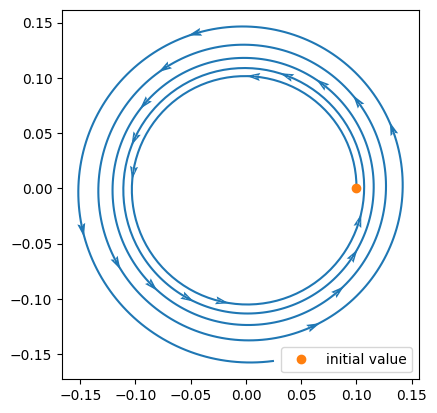
ところで, 線形力学系においては固有値に対応する一般固有ベクトル (の実部および虚部) で張られる部分空間として安定部分空間, 不安定部分空間, 中心部分空間を考えた. 特に, 平衡点におけるヤコビ行列の固有値に実部が $0$ であるものが存在する場合を考えると, 線形化方程式は中心部分空間を持つことになり, このときは線形安定性解析が適用できない. ただし, 不安定部分空間が存在するならば, 指数的に発散する解軌道が存在するため平衡点は不安定であることがわかるし, 不安定部分空間が存在しないならば, 安定部分空間方向には指数的に減衰するため, 中心部分空間上の解の挙動にだけ注目すれば, 安定性を判断できそうである.
実際には, 剰余項の影響があるためここまで単純ではないが, 実は同様のアイデアに基づき 中心多様体 上の解の挙動を考えることで, 安定性を判定することができる.
まず, 自励系 $\mathbf{x}' = \mathbf{f}(\mathbf{x})$ が平衡点 $\widetilde{\mathbf{x}}$ を持つとき, $\mathbf{x}-\widetilde{\mathbf{x}}$ を改めて $\mathbf{x}$ と表す変数変換により, $\mathbf{0}$ が平衡点であると思うことができる. そこで $\mathbf{x}' = \mathbf{f}(\mathbf{x})$ が平衡点 $\mathbf{0}$ を持つとしよう. このとき, \[ \mathbf{x}' = D\mathbf{f}(\mathbf{0})\mathbf{x} + \mathbf{R}(\mathbf{x}) \] の平衡点 $\mathbf{0}$ における線形化問題の中心部分空間, 安定部分空間, 不安定部分空間をそれぞれ \[ E^c,\ E^s, \ E^u \] とおく. ここで, 直和分解 \[ \mathbb{R}^d = E^c\oplus E^s\oplus E^u \] が成立することに注意. さて, ある正則行列 $P$ を用いて $P^{-1}D\mathbf{f}(\mathbf{0})P$ をジョルダン標準形にすることができるが, このジョルダン標準形を上の直和分解に基づき \[ P^{-1}D\mathbf{f}(\mathbf{0})P = \begin{pmatrix} A_c & O & O \cr O & A_s & O \cr O & O & A_u \end{pmatrix} \] と表記することにしよう. 各ジョルダン細胞が固有値を用いて表されることを考えれば,
- 行列 $A_c$ は全ての固有値の実部が $0$,
- 行列 $A_s$ は全ての固有値の実部が負,
- 行列 $A_u$ は全ての固有値の実部が正
となっていることがわかる. ここで, \[ P^{-1}\mathbf{x} = \begin{pmatrix} \mathbf{x}_c \cr \mathbf{x}_s \cr \mathbf{x}_u \end{pmatrix} \] とおくと, \[ \begin{pmatrix} \mathbf{x}_c' \cr \mathbf{x}_s' \cr \mathbf{x}_u' \end{pmatrix} = P^{-1}\mathbf{x}' = P^{-1}(D\mathbf{f}(\mathbf{0})\mathbf{x} + \mathbf{R}(\mathbf{x})) = \begin{pmatrix} A_c & O & O \cr O & A_s & O \cr O & O & A_u \end{pmatrix}\begin{pmatrix} \mathbf{x}_c \cr \mathbf{x}_s \cr \mathbf{x}_u \end{pmatrix} + P^{-1}\mathbf{R}(\mathbf{x}) \] が成立する. 従って, これを座標変換として用いることで, 平衡点近傍で座標を \[ (\mathbf{x}_c, \mathbf{x}_s, \mathbf{x}_u) \] と表すことにすれば, 考える自励系は \[ \mathbf{x}' = \begin{pmatrix} A_c & O & O \cr O & A_s & O \cr O & O & A_u \end{pmatrix}\mathbf{x} + \widetilde{\mathbf{R}}(\mathbf{x}) \] という形のものに帰着され, この自励系の平衡点 $\mathbf{x}=\mathbf{0}$ での線形化問題は \[ \mathbf{x}' = \begin{pmatrix} A_c & O & O \cr O & A_s & O \cr O & O & A_u \end{pmatrix}\mathbf{x} \] である.
この表記に基づき, 中心多様体の定義を述べる:
ベクトル場 $\mathbf{f}: \mathbb{R}^d\to\mathbb{R}^d$ が $C^1$ 級であるとする. また, 自励系 \[ \mathbf{x}' = \begin{pmatrix} A_c & O & O \cr O & A_s & O \cr O & O & A_u \end{pmatrix}\mathbf{x} + \widetilde{\mathbf{R}}(\mathbf{x}) \] が平衡点 $\mathbf{0}$ を持ち, また平衡点 $\mathbf{0}$ における線形化問題が \[ \mathbf{x}' = \begin{pmatrix} A_c & O & O \cr O & A_s & O \cr O & O & A_u \end{pmatrix}\mathbf{x} \] であるとする, ただし, $A_c\in \mathbb{R}^{n_c\times n_c}$, $A_s\in\mathbb{R}^{n_s\times n_s}$, $A_u\in\mathbb{R}^{n_u\times n_u}$ とする. また, 上のブロック対角行列に対応して平衡点近傍において座標を \[ \mathbf{x} = (\mathbf{x}_c, \mathbf{x}_s, \mathbf{x}_u) \] と表記する, ただし, $\mathbf{x}_c\in \mathbb{R}^{n_c}$, $\mathbf{x}_s\in\mathbb{R}^{n_s}$, $\mathbf{x}_u\in\mathbb{R}^{n_u}$ とする.
いま, 関数 $\mathbf{h}_s: \mathbb{R}^{n_c}\to \mathbb{R}^{n_s}$, $\mathbf{h}_u: \mathbb{R}^{n_c}\to \mathbb{R}^{n_u}$ および十分小さい $\delta\gt0$ を用いて表される \[ W^c(\mathbf{0}) = \{(\mathbf{x}_c, \mathbf{x}_s, \mathbf{x}_u) \in \mathbb{R}^d : \mathbf{x}_s = \mathbf{h}_s(\mathbf{x}_c),\ \mathbf{x}_u = \mathbf{h}_u(\mathbf{x}_c),\ \|\mathbf{x}_c\|\lt \delta\} \] であって, 以下を満たすものが存在するとき, $W^c(\mathbf{0})\subset\mathbb{R}^d$ はこの自励系の平衡点 $\mathbf{0}$ に対する 中心多様体 であるという:
- $W^c(\mathbf{0})\subset\mathbb{R}^d$ は平衡点 $\mathbf{0}$ において線形化問題の中心部分空間 $E^c$ に接する.
- つまり \[ \mathbf{h}_s(\mathbf{0}) = \mathbf{0},\quad D\mathbf{h}_s(\mathbf{0}) = O, \] \[ \mathbf{h}_u(\mathbf{0}) = \mathbf{0},\quad D\mathbf{h}_u(\mathbf{0}) = O \] が成立する.
- $W^c(\mathbf{0})$ は不変集合である, つまり自励系の解 $\mathbf{x}(t)$ は \[ \mathbf{x}(0) \in W^c(\mathbf{0})\implies \mathbf{x}(t)\in W^c(\mathbf{0}) \] を満たす.
- 直観的には, 平衡点付近での自励系を考える際に, 線形化問題の中心部分空間を剰余項の影響を考慮して変形したものが中心多様体である. その "変形" を表すものが $\mathbf{h}_s$, $\mathbf{h}_c$ により与えられる. 中心多様体は不変であることから, 中心多様体上に限って自励系を考えることが可能である.
- ここでは平衡点が $\mathbf{0}$ である場合を考えているが, 一般に平衡点 $\widetilde{\mathbf{x}}$ における中心多様体は $W^c(\widetilde{\mathbf{x}})$ と表記される. これは安定集合 (安定多様体) $W^s(\widetilde{\mathbf{x}})$ および 不安定集合 (不安定多様体) $W^u(\widetilde{\mathbf{x}})$ の表記と対応したものである.
- また, 平衡点の近傍でのみ中心多様体の性質を満たすものを考えることもできる (これを 局所中心多様体 と呼ぶことがある). 以下の議論で中心多様体に言及するが, 実際には局所中心多様体のみ考えれば良い.
さて, 中心多様体のアイデアを非双曲型平衡点の安定性解析に応用しよう. まず, 線形化問題が不安定部分空間を持つ場合は平衡点が不安定であることは既に述べたので, ここで考えたいのは平衡点におけるヤコビ行列の全ての固有値が $0$ 以下の場合に限られる. そこで, 以下のような自励系を考えてみよう: \[ \begin{pmatrix} \mathbf{x}_c' \cr \mathbf{x}_s' \end{pmatrix} = \begin{pmatrix} A_c & O \cr O & A_s \end{pmatrix}\begin{pmatrix} \mathbf{x}_c \cr \mathbf{x}_s \end{pmatrix} + \begin{pmatrix} \mathbf{r}_c(\mathbf{x}_c, \mathbf{x}_s) \cr \mathbf{r}_s(\mathbf{x}_c, \mathbf{x}_s) \end{pmatrix} = \begin{pmatrix} A_c\mathbf{x}_c + \mathbf{r}_c(\mathbf{x}_c, \mathbf{x}_s) \cr A_s\mathbf{x}_s + \mathbf{r}_s(\mathbf{x}_c, \mathbf{x}_s) \end{pmatrix}, \tag{$\ast$} \] ここで $\mathbf{x}_c\in \mathbb{R}^{n_c}$, $\mathbf{x}_s\in \mathbb{R}^{n_s}$ であり, 行列 $A_c\in\mathbb{R}^{n_c\times n_c}$ の全ての固有値の実部は $0$ であり, $A_s\in\mathbb{R}^{n_s\times n_s}$ の全ての固有値の実部は負であるとする. さらに, \[ \mathbf{r}_c(\mathbf{0}) = \mathbf{0},\quad D\mathbf{r}_c(\mathbf{0}) = \mathbf{0}, \] \[ \mathbf{r}_s(\mathbf{0}) = \mathbf{0},\quad D\mathbf{r}_s(\mathbf{0}) = \mathbf{0}, \] であるとする. このとき, 自励系 $(\ast)$ は $\mathbf{x} = (\mathbf{x}_c, \mathbf{x}_s) = \mathbf{0}\in\mathbb{R}^d$ を平衡点として持ち, 平衡点 $\mathbf{0}$ における線形化問題は \[ \begin{pmatrix} \mathbf{x}_c' \cr \mathbf{x}_s' \end{pmatrix} = \begin{pmatrix} A_c & O \cr O & A_s \end{pmatrix}\begin{pmatrix} \mathbf{x}_c \cr \mathbf{x}_s \end{pmatrix} \] である. このとき, 中心部分空間と安定部分空間はそれぞれ行列 $A_c$, $A_s$ の固有ベクトル (の実部および虚部) により張られる空間に対応し, $E^c=\mathbb{R}^{n_c}$, $E^s=\mathbb{R}^{n_s}$ である. 従って, 中心多様体は適切な $\mathbf{h}_s:\mathbb{R}^{n_c}\to\mathbb{R}^{n_s}$ を用いて \[ W^c(\mathbf{0}) = \{(\mathbf{x}_c, \mathbf{x}_s)\in\mathbb{R}^d : \mathbf{x}_s = \mathbf{h}_s(\mathbf{x}_c),\ \|\mathbf{x}_c\|\lt \delta\} \] と表されることになる.
これに関して, 以下が成立することが知られている:
- 自励系 $(\ast)$ の中心多様体は存在する, 具体的には, $\mathbf{r}_c$, $\mathbf{r}_c$ が $C^k$ 級ならば $\mathbf{h}_s(\mathbf{0})=\mathbf{0}$, $D\mathbf{h}_s(\mathbf{0}) = O$ を満たし, \[ W^c(\mathbf{0}) = \{(\mathbf{x}_c, \mathbf{x}_s)\in\mathbb{R}^d : \mathbf{x}_s = \mathbf{h}_s(\mathbf{x}_c),\ \|\mathbf{x}_c\|\lt \delta\} \] を不変集合とする $C^k$ 級関数 $\mathbf{h}_s: \mathbb{R}^{n_c}\to\mathbb{R}^{n_s}$ が存在する (ただし一般には一意ではない).
- 自励系 $(\ast)$ の平衡点付近での解の挙動は, 中心多様体 $W^c(\mathbf{0})$ (局所中心多様体) 上に限った解の挙動により決定される. 特に, 自励系 $(\ast)$ の平衡点 $\mathbf{0}\in\mathbb{R}^d$ での安定性は, 中心多様体上の自励系 \[ \mathbf{x}_c' = A_c\mathbf{x}_c + \mathbf{r}_c(\mathbf{x}_c, \mathbf{h}_c(\mathbf{x}_c)) \] の平衡点 $\mathbf{0}\in\mathbb{R}^{n_c}$ の安定性と一致する (これを 中心多様体縮約 ということがある).
直観的には, 与えられた自励系 $(\ast)$ の平衡点 $\mathbf{0}$ における安定性を判定する際に, 安定部分空間方向は指数的に減衰するため気にする必要が無い, ということを意味している. 中心多様体を求めた上で中心多様体縮約により低次元の力学系の安定性解析に帰着させれば, 元の自励系よりも容易に安定性を判定できることが期待できる.
さて, 中心多様体上で自励系 $(\ast)$ の解 $(\mathbf{x}_c(t), \mathbf{x}_s(t))$ を考えよう. まず, 中心多様体上では $\mathbf{x}_s = \mathbf{h}_s(\mathbf{x}_c)$ であるため, \[ \mathbf{x}_s' = D\mathbf{h}_s(\mathbf{x}_c)\mathbf{x}_c' \] が得られる. 次に, (中心多様体上では $\mathbf{x}_s = \mathbf{h}_s(\mathbf{x}_c)$ であることにもう一度注意して) 両辺にそれぞれ $(\ast)$ 式を代入すると \[ D\mathbf{h}_s(\mathbf{x}_c)(A_c\mathbf{x}_c + \mathbf{r}_c(\mathbf{x}_c, \mathbf{h}_s(\mathbf{x}_c))) = A_s\mathbf{x}_s + \mathbf{r}_s(\mathbf{x}_c, \mathbf{h}(\mathbf{x}_c)) \] という等式が得られる (ただし, 具体的に計算する際には上の $\mathbf{x}_s' = D\mathbf{h}_s(\mathbf{x}_c)\mathbf{x}_c'$ の方が使い勝手が良いことも多い). これを近似的に満たす関数は $\mathbf{h}_s$ の近似を与えることになる. 実際に安定性を判定する際は, 適当な多項式 $S(t)$ を見つけることで, 中心多様体の近似を構成し, その上での解の挙動を考えれば十分である:
関数 (特に多項式) $\varphi:\mathbb{R}^{n_c}\to\mathbb{R}^{n_s}$ が, \[ \left\{\begin{array}{l} \varphi(\mathbf{0}) = \mathbf{0}, \cr D\varphi(\mathbf{0}) = O, \cr D\varphi(\mathbf{\mathbf{x}_c})(A_c\mathbf{x}_c + \mathbf{r}_c(\mathbf{x}_c, \varphi(\mathbf{x}_c))) - (A_s\mathbf{x}_s + \mathbf{r}_s(\mathbf{x}_c, \varphi(\mathbf{x}_c))) = O(|\mathbf{x}_c|^k) \end{array}\right. \] を満たすならば, 自励系 $(\ast)$ の中心多様体 $W^c$ を定義する $\mathbf{h}_s$ に対し, \[ \mathbf{h}_s(\mathbf{x}_c) = \varphi(\mathbf{x}_c) + O(|\mathbf{x}_c|^k) \] が成立する, ここで, $O(|\mathbf{x}_c|^k)$ はランダウの記号である.
上の式において, $k$ が大きくなるように多項式 $\varphi$ を取れれば, それが局所中心多様体の良い近似を与えることになり, 安定性の判定に利用することができる.
自励系 \[ \mathbf{x}' = \mathbf{f}(\mathbf{x}) = \begin{pmatrix} y\cr -y-3(x-1)^3 \end{pmatrix} \] の平衡点 $\widetilde{\mathbf{x}} = (1, 0)$ における安定性を判定してみよう.
まず, 線形化問題を考えると, ヤコビ行列 \[ D\mathbf{f}(\widetilde{\mathbf{x}}) = \begin{pmatrix} 0 & 1 \cr 0 & -1 \end{pmatrix} \] の固有値は $\lambda_1 = 0$, $\lambda_2 = -1$ である. 従って, $\widetilde{\mathbf{x}}$ は非双曲型平衡点であり, 線形安定性解析は適用できない.
そこで, 中心多様体縮約を用いた安定性解析を試みる. 以降, 変数変換により改めて $\mathbf{x} = \mathbf{x}-\widetilde{\mathbf{x}}$ としておく: \[ \mathbf{x}' = \mathbf{f}(\mathbf{x}) = \begin{pmatrix} y \cr -y-3x^3 \end{pmatrix} \] ヤコビ行列 $D\mathbf{f}(\mathbf{0})$ の $2$ つの固有値 $\lambda_1 = 0$, $\lambda_2 = -1$ に対応する固有ベクトルは, 例えば \[ \mathbf{v}_1 = \begin{pmatrix} 1 \cr 0 \end{pmatrix},\quad \mathbf{v}_2 = \begin{pmatrix} 1 \cr -1 \end{pmatrix} \] であり, 従って $P = (\mathbf{v}_1, \mathbf{v}_2)$ とおくと \[ \begin{pmatrix} x_c \cr x_s \end{pmatrix} = P^{-1}\mathbf{x} = \begin{pmatrix} x+y \cr -y \end{pmatrix},\quad \begin{pmatrix} x \cr y \end{pmatrix} = P\begin{pmatrix} x_c \cr x_s \end{pmatrix} = \begin{pmatrix} x_c + x_s \cr -x_s \end{pmatrix} \] であり, \[ \begin{array}{rl} \begin{pmatrix} x_c' \cr x_s' \end{pmatrix} &= P^{-1}\mathbf{x}' = P^{-1}\left(D\mathbf{f}(\mathbf{0})\mathbf{x} + \begin{pmatrix} 0 \cr -3x^3 \end{pmatrix}\right) \cr &= \begin{pmatrix} \lambda_1 & 0 \cr 0 & \lambda_2 \end{pmatrix}\begin{pmatrix} x_c \cr x_s \end{pmatrix} + \begin{pmatrix} -3x^3 \cr -3x^3 \end{pmatrix} \cr &= \begin{pmatrix} \lambda_1 & 0 \cr 0 & \lambda_2 \end{pmatrix}\begin{pmatrix} x_c \cr x_s \end{pmatrix} + \begin{pmatrix} -3(x_c+x_s)^3 \cr -3(x_c+x_s)^3 \end{pmatrix} \end{array} \] となるため, ($\lambda_1=0$, $\lambda_2=-1\neq0$ であることを思い出すと) この自励系は $(\ast)$ 式の形になっている. これを用いて, 中心多様体 $W^c$ を定義する $h_s: \mathbb{R}\to \mathbb{R}$ の近似となる多項式 $\varphi: \mathbb{R}\to \mathbb{R}$ を構成しよう. $\varphi(\mathbf{0})=\mathbf{0}$, $D\varphi(\mathbf{0}) = O$ より $2$ 次以下の項は消えてしまうことを考慮して \[ \varphi(x_c) = a_2x_c^2 + a_3x_c^3 \] とおいてみる. このとき, 上の式と $x_s=\varphi(x_c)$ に基づき $\varphi'(x_c)x_c' - x_s' = O(x_c^k)$ の $k$ をできるだけ大きくする $a_2$, $a_3$ を求める: \[ \begin{array}{rl} \varphi'(x_c)x_c' - x_s' &= (2a_2x_c + 3a_3x_c^2)x_c' - x_s' \cr &= -(-\varphi(x_c) -3(x_c+\varphi(x_c))^3) \cr &= a_2x_c^2 + a_3x_c^3 + 3(x_c+a_2x_c^2+a_3x_c^3)^3 \cr &= a_2x_c^2 + (3+a_3)x_c^3 + O(x_c^4). \end{array} \] 従って, $a_2=0$, $a_3 = -3$ とすれば $\varphi(x_c) = -3x_c^3$ は ($x_c=0$ 付近で) 中心多様体の十分に良い近似を与える.
ここで中心多様体の近似 $\{(x_c,x_s)\in\mathbb{R}^2 : x_s=\varphi(x_c),\ |x_c|\text{ は十分小さい}\}$ 上での自励系 \[ x_c' = -3(x_c+\varphi(x_c))^3 = -3(x_c-3x_c^3)^3 \] の平衡点 $x_c=0$ の安定性を考えると, $x_c=0$ 付近では $x_c' = -3(x_c-3x_c^3)^3 \lt 0$ となることから, この $1$ 次元力学系の平衡点 $x_c=0$ は漸近安定である. 中心多様体縮約より, 元の自励系の平衡点付近での挙動は, この $1$ 次元力学系の平衡点 $x_c=0$ 付近での挙動に近い, つまり漸近安定であることがわかる.
実際に, 元の自励系の平衡点 $\widetilde{\mathbf{x}} = (1,0)$ 付近に初期値をいくつか設定し, 数値計算を行った結果を以下に掲載する. 図中の青い線が各初期値からの解の軌道であり, 赤い線は平衡点付近での中心多様体の近似 (つまり局所中心多様体の近似) を表す. ベクトル $\mathbf{v}_2$ で表される安定方向には (指数的に減衰するため) 急速に動いて中心多様体に近づき, 平衡点付近では中心多様体の近似に沿うようにして平衡点に向かって動いている様子を確認できる.
まとめ
力学系の解の挙動を説明するための概念として, 平衡点とその安定性について述べ, また平衡点の安定性を調べる方法を紹介した. 安定性解析に関しては, リアプノフの安定性定理の応用が数学的には端正 (かつ数値解析においても興味深い) ものだが, リアプノフ関数を見つける一般的な方法は存在しないため, 多くの場合は線形安定性解析が有用に感じるだろう. また, 平衡点が非双曲型の場合は線形安定性解析が適用できないが, 線形化問題の固有値および固有ベクトルに注目することで, "安定部分空間方向" は気にする必要がないため, 結果的に中心多様体にのみ注目すれば良いことがわかる.
自励系の平衡点を求め, その安定性を調べることは, 特に非線形力学系の解の挙動を調べる際に有力な手段となる. 平衡点が漸近安定であった方が数学的な取り扱いは容易であるが, むしろ平衡点が漸近安定でない状況の方が解の挙動としては興味深い.
数値計算: 陽的ルンゲ=クッタ法
ここでは, 非線形力学系を想定した数値計算手法として 古典的ルンゲ=クッタ法 の応用例を述べる. まず, 力学系 $\mathbf{x}' = \mathbf{f}(\mathbf{x})$ に対するオイラー法を考えてみる. 時間区間 $[0,T]$ を $N$ 等分して $\tau = T/N$, $t_n = n\tau$ としたとき, $\mathbf{x}_n \approx \mathbf{x}(t_n)$ を以下で求める:
- 前進オイラー法 (陽的オイラー法): \[ \dfrac{\mathbf{x}_{n+1} - \mathbf{x}_n}{\tau} = \mathbf{f}(\mathbf{x}_n), \]
- 後退オイラー法 (陰的オイラー法): \[ \dfrac{\mathbf{x}_{n+1} - \mathbf{x}_n}{\tau} = \mathbf{f}(\mathbf{x}_{n+1}), \]
ただし, $\mathbf{x}_0$ は与えられる初期値を用いるものとする. 前進オイラー法は $\mathbf{x}_n$ が与えられれば, 方程式を解くことなく \[ \mathbf{x}_{n+1} = \mathbf{x}_n + \tau\mathbf{f}(\mathbf{x}_n) \] を計算できる (このことから "陽的" オイラー法と呼ばれる). 一方で, 後退オイラー法は \[ \mathbf{x}_{n+1}-\tau\mathbf{f}(\mathbf{x}_{n+1}) = \mathbf{x}_n \] を解くことで $\mathbf{x}_{n+1}$ を求める必要がある. 線形力学系の場合は ($\mathbf{f}(\mathbf{x}) = A\mathbf{x}$ の場合は) 線形計算に帰着されるため比較的容易に解くことができるが, 非線形力学系の場合はニュートン法のような数値解法を用いることになるだろう. 前進オイラー法は対象とする方程式によっては, 時間分割幅 $\tau$ を極端に小さくしないと数値解の振動のような望ましくない挙動が起こり得る. 後退オイラー法ならそのような心配はないものの, いずれにしても精度が低いという欠点を抱えている.
ところで, 常微分方程式系 $\mathbf{x}' = \mathbf{f}(\mathbf{x})$ に対する前進オイラー法および後退オイラー法は \[ \mathbf{x}(t+\tau) = \mathbf{x}(t) + \int_t^{t+\tau}\mathbf{x}'(s)~ds = \mathbf{x}(t) + \int_t^{t+\tau}\mathbf{f}(\mathbf{x}(s))~ds \] の近似であると見なすこともできる. つまり, 上の式において \[ \int_t^{t+\tau}\mathbf{f}(\mathbf{x}(s))~ds \approx \tau \mathbf{f}(\mathbf{x}(t)) \quad\text{もしくは}\quad \tau\mathbf{f}(\mathbf{x}(t+\tau)) \] とみなすとき, 前者が前進オイラー法に, 後者が後退オイラー法に対応している. しかしながら, このような数値積分による "近似" の精度が低いことは明白だろう.
そこで, より高精度な数値積分を用いることで, 常微分方程式系に対する高精度な数値計算手法を導出することができるが, そのようなアイデアに基づく手法は ルンゲ=クッタ法 (Runge-Kutta method) と総称される (前進オイラー法や後退オイラー法も, ルンゲ=クッタ法の一種とみなされる). 特に古典的なものは, 以下に述べる $4$ 段陽的ルンゲ=クッタ法 である: \[ \mathbf{x}_{n+1} = \mathbf{x}_n + \dfrac{\tau}{6}\left(\mathbf{k}_1 + 2\mathbf{k}_2 + 2\mathbf{k}_3 + \mathbf{k}_4\right), \] ここで \[ \begin{array}{l} \mathbf{k}_1 = \mathbf{f}(\mathbf{x}_n), \cr \mathbf{k}_2 = \mathbf{f}\left(\mathbf{x}_n + \dfrac{\tau}{2}\mathbf{k}_1\right), \cr \mathbf{k}_3 = \mathbf{f}\left(\mathbf{x}_n + \dfrac{\tau}{2}\mathbf{k}_2\right), \cr \mathbf{k}_4 = \mathbf{f}(\mathbf{x}_n + \tau\mathbf{k}_3) \end{array} \] である (つまり数値積分におけるシンプソン則 \[ \int_t^{t+\tau}\mathbf{f}(\mathbf{x}(s))~ds \approx \dfrac{\tau}{6}\left(\mathbf{f}(\mathbf{x}(t)) + 4\mathbf{f}(\mathbf{x}(t+\tau/2)) + \mathbf{f}(\mathbf{x}(t+\tau))\right) \] と類似の \[ \int_t^{t+\tau}\mathbf{f}(\mathbf{x}(s))~ds \approx \dfrac{\tau}{6}\left(\mathbf{k}_1 + 2\mathbf{k}_2 + 2\mathbf{k}_3 + \mathbf{k}_4\right), \] という近似を用いていることに相当している). 公式の覚えやすさなどから、これを単にルンゲ=クッタ法と言及することも多い. この公式は計算も容易であり, オイラー法よりも高精度なこともあって (類似の公式も含め) 様々な場面に応用されるが, 考える問題次第では他の計算手法 (例えば陰的ルンゲ=クッタ法など) が望ましい場合もあるため, 万能というわけではない.
これを用いて非線形力学系の数値計算を行うサンプルコードを以下に掲載する.
import numpy as np
import matplotlib.pyplot as plt
# x' = -y + x(x^2+y^2)
# y' = x + y(x^2+y^2)
# ベクトル場を定義
def f(x: np.ndarray) -> np.ndarray:
return np.array([
-x[1] + x[0] * (x[0]**2 + x[1]**2),
x[0] + x[1] * (x[0]**2 + x[1]**2)
])
# 古典的ルンゲ=クッタ (４段陽的ルンゲ=クッタ)
def runge_kutta(x: np.ndarray, tau: float) -> np.ndarray:
k1 = f(x)
k2 = f(x + tau/2 * k1)
k3 = f(x + tau/2 * k2)
k4 = f(x + tau * k3)
return x + tau/6 * (k1 + 2*k2 + 2*k3 + k4)
fig, ax = plt.subplots()
ax.set_aspect('equal')
# 時間区間分割
T: float = 30
N: int = 1000
t = np.linspace(0, T, N+1)
tau: float = T/N
# 初期条件
x0: float = 0.1
y0: float = 0
# 配列を初期化
x = np.empty((2, N+1), dtype = float)
x[:, 0] = [x0, y0]
# 古典的ルンゲ=クッタ (４段陽的ルンゲ=クッタ)
for i in range(N):
x[:, i+1] = runge_kutta(x[:, i], tau)
# プロット
ax.plot(x[0], x[1])
# 向きを表す矢印
vec = f(x)
ax.quiver(x[0][50:N:50], x[1][50:N:50], vec[0][50:N:50], vec[1][50:N:50], scale=5, headwidth=3, minshaft=0, color='tab:blue')
# 初期値
ax.plot(x[0, 0], x[1, 0], linestyle='None', marker='o', label='initial value')
ax.legend()
plt.show()